Lectures · Bài giảng › L08
Substitution, volumes, arc length and surface areaĐổi biến, thể tích, độ dài cung và diện tích mặt
Slides 2–7 finish the integration methods for definite integrals (substitution with changed limits, even/odd symmetry, parts). Slides 9–34 are volumes: general cross-sections, disks, washers and cylindrical shells; slides 36–52 arc length; slides 53–59 surface area. Slides 61–67 are an appendix with derivations (self-study).
Every application has the same skeleton: divide, approximate by a simple piece, sum, take the limit. Teach the recipe for each formula (what to slice, what the radius is, what to integrate with respect to) and let the student draw the picture before writing any integral.
Slide 2–7 hoàn tất các phương pháp tích phân cho tích phân xác định (đổi biến có đổi cận, tính đối xứng chẵn/lẻ, từng phần). Slide 9–34 là thể tích: mặt cắt tổng quát, đĩa (disk), vòng đệm (washer) và vỏ trụ (shell); slide 36–52 là độ dài cung; slide 53–59 là diện tích mặt. Slide 61–67 là phụ lục chứng minh (tự học).
Mọi ứng dụng có cùng một khung: chia nhỏ, xấp xỉ bằng mảnh đơn giản, cộng lại, lấy giới hạn. Dạy công thức cho từng loại (cắt cái gì, bán kính là gì, lấy tích phân theo biến nào) và để bạn tự vẽ hình trước khi viết tích phân.
Textbook · Giáo trình: Thomas ch. 5 (5.5) and ch. 6 (6.1–6.4) · Stewart ch. 5 (5.5), ch. 6 (6.1–6.3, 6.5) and ch. 8 (8.1–8.2)
Slide list · Danh sách slide (67)
Roadmap: substitution and parts · Lộ trình: đổi biến và từng phần
★ Context · Bổ trợ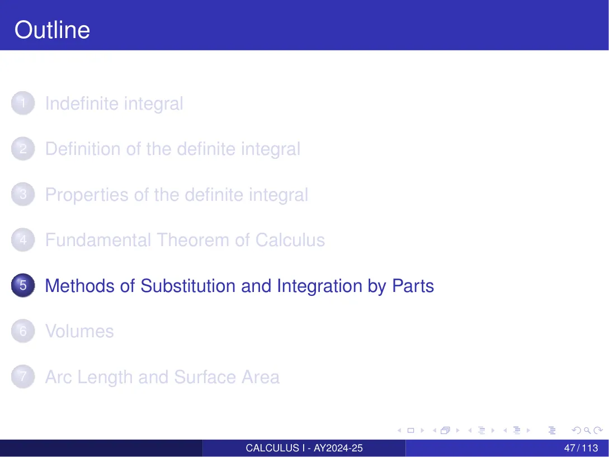
Outline of Chapter 4: we are at part 5, methods of substitution and integration by parts, now for definite integrals.
Lộ trình Chương 4: ta ở phần 5, phương pháp đổi biến và từng phần, lần này cho tích phân xác định.
Substitution rule for definite integrals · Quy tắc đổi biến cho tích phân xác định
★★★ Core · Cốt lõi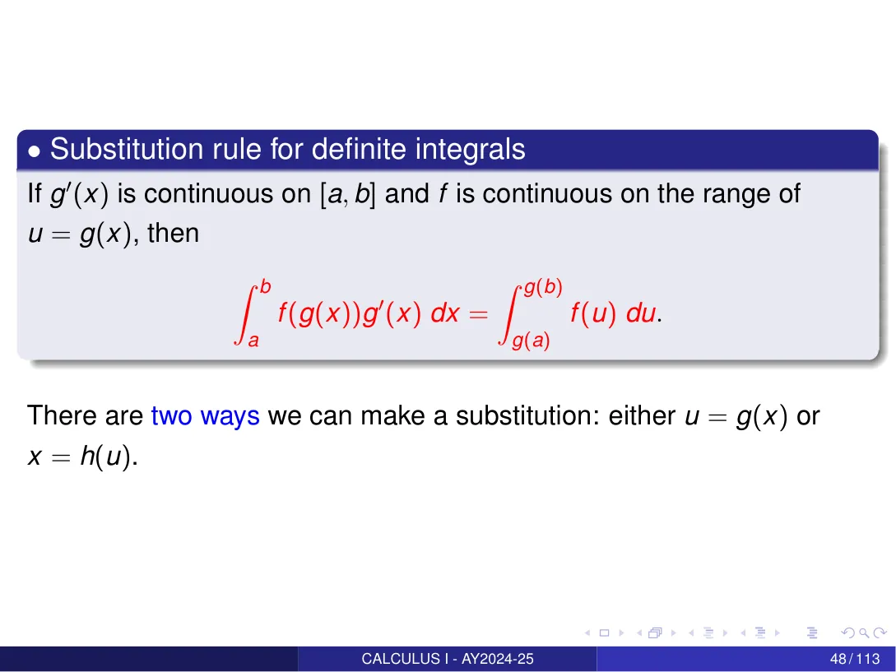
If $g'$ is continuous on $[a,b]$ and $f$ is continuous on the range of $u=g(x)$, then $\int_a^bf(g(x))g'(x)\,dx=\int_{g(a)}^{g(b)}f(u)\,du$. The limits change with the variable. Two ways to substitute: $u=g(x)$, or $x=h(u)$.
Nếu $g'$ liên tục trên $[a,b]$ và $f$ liên tục trên miền giá trị của $u=g(x)$ thì $\int_a^bf(g(x))g'(x)\,dx=\int_{g(a)}^{g(b)}f(u)\,du$. Cận đổi theo biến. Có hai cách đổi: $u=g(x)$, hoặc $x=h(u)$.
Forgetting to change the limits (or changing them and then going back to $x$ as well) is the most frequent mistake in definite integrals.
Quên đổi cận (hoặc đổi cận rồi lại quay về $x$) là lỗi thường gặp nhất ở tích phân xác định.
Evaluate $\displaystyle\int_0^1xe^{x^2}\,dx$ and $\displaystyle\int_0^{\pi/2}\sin x\cos x\,dx$.
Tính $\displaystyle\int_0^1xe^{x^2}\,dx$ và $\displaystyle\int_0^{\pi/2}\sin x\cos x\,dx$.
Answer and solution · Đáp án và lời giải
Answer · Đáp án: $\dfrac{e-1}2$ and $\dfrac12$
First: $u=x^2$, $du=2x\,dx$, limits $0\to1$: $\frac12\int_0^1e^udu=\frac{e-1}2$. Second: $u=\sin x$, limits $0\to1$: $\int_0^1u\,du=\frac12$.
Thứ nhất: $u=x^2$, $du=2x\,dx$, cận $0\to1$: $\frac12\int_0^1e^udu=\frac{e-1}2$. Thứ hai: $u=\sin x$, cận $0\to1$: $\int_0^1u\,du=\frac12$.
Example: $\int_0^2\sqrt x\,dx$ in two ways · Ví dụ: $\int_0^2\sqrt x\,dx$ theo hai cách
★★★ Core · Cốt lõi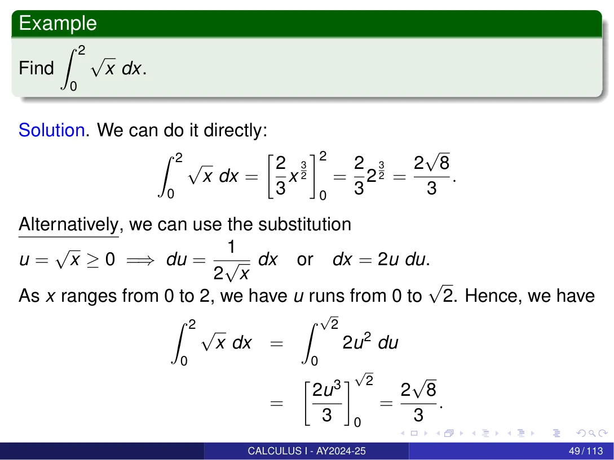
Directly: $\left[\frac23x^{3/2}\right]_0^2=\frac23\cdot2^{3/2}=\frac{2\sqrt8}3$. With $u=\sqrt x$: $x=u^2$, $dx=2u\,du$, and as $x$ runs from $0$ to $2$, $u$ runs from $0$ to $\sqrt2$: $\int_0^{\sqrt2}2u^2du=\left[\frac{2u^3}3\right]_0^{\sqrt2}=\frac{2\sqrt8}3$. Same answer; note the new limits $0$ and $\sqrt2$ (not $0$ and $2$).
Trực tiếp: $\left[\frac23x^{3/2}\right]_0^2=\frac23\cdot2^{3/2}=\frac{2\sqrt8}3$. Với $u=\sqrt x$: $x=u^2$, $dx=2u\,du$, và khi $x$ chạy từ $0$ đến $2$ thì $u$ chạy từ $0$ đến $\sqrt2$: $\int_0^{\sqrt2}2u^2du=\left[\frac{2u^3}3\right]_0^{\sqrt2}=\frac{2\sqrt8}3$. Cùng đáp số; lưu ý cận mới là $0$ và $\sqrt2$ (không phải $0$ và $2$).
Evaluate $\displaystyle\int_1^4\frac{dx}{\sqrt x\,(1+\sqrt x)}$ with $u=\sqrt x$.
Tính $\displaystyle\int_1^4\frac{dx}{\sqrt x\,(1+\sqrt x)}$ bằng $u=\sqrt x$.
Answer and solution · Đáp án và lời giải
Answer · Đáp án: $2\ln\dfrac32$
$u=\sqrt x$, $dx=2u\,du$, limits $1\to2$: $\int_1^2\frac{2u\,du}{u(1+u)}=2\ln(1+u)\Big|_1^2=2\ln\frac32$.
$u=\sqrt x$, $dx=2u\,du$, cận $1\to2$: $\int_1^2\frac{2u\,du}{u(1+u)}=2\ln(1+u)\Big|_1^2=2\ln\frac32$.
Integrals of even and odd functions · Tích phân của hàm chẵn và hàm lẻ
★★★ Core · Cốt lõi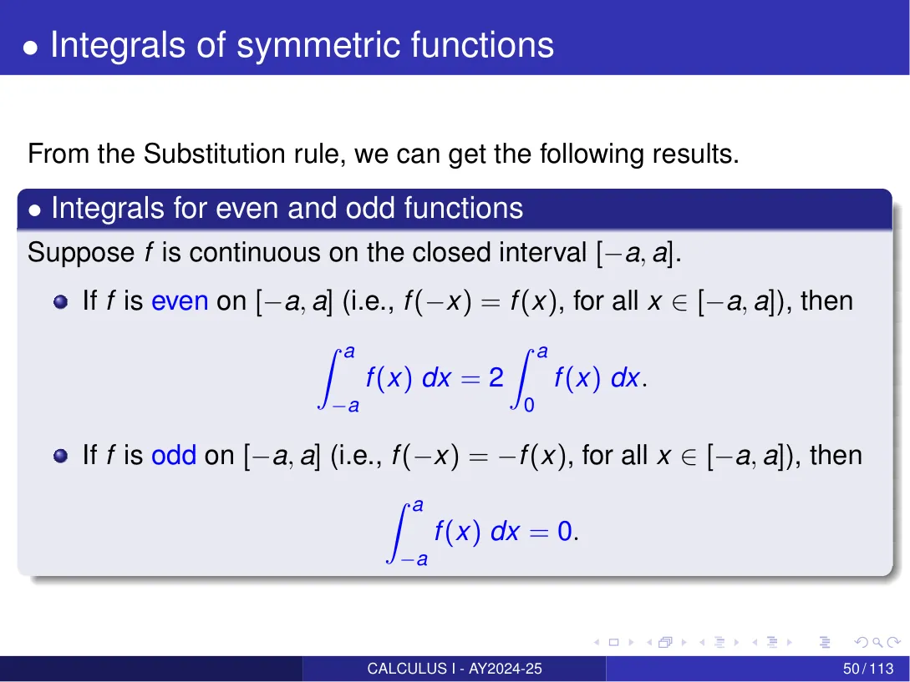
If $f$ is continuous on $[-a,a]$: even $\Rightarrow\int_{-a}^af=2\int_0^af$; odd $\Rightarrow\int_{-a}^af=0$. Always check the symmetry before computing. A sum splits: integrate the even part (double) and drop the odd part.
Nếu $f$ liên tục trên $[-a,a]$: chẵn $\Rightarrow\int_{-a}^af=2\int_0^af$; lẻ $\Rightarrow\int_{-a}^af=0$. Luôn kiểm tra tính đối xứng trước khi tính. Một tổng được tách ra: lấy phần chẵn (nhân đôi) và bỏ phần lẻ.
Evaluate $\displaystyle\int_{-\pi}^{\pi}x^3\cos x\,dx$ and $\displaystyle\int_{-1}^{1}(x^2+x)\,dx$.
Tính $\displaystyle\int_{-\pi}^{\pi}x^3\cos x\,dx$ và $\displaystyle\int_{-1}^{1}(x^2+x)\,dx$.
Answer and solution · Đáp án và lời giải
Answer · Đáp án: $0$ and $\dfrac23$
$x^3\cos x$ is odd (odd times even): integral $0$. In $x^2+x$ the term $x$ is odd (drops) and $x^2$ is even: $2\int_0^1x^2dx=\frac23$.
$x^3\cos x$ là hàm lẻ (lẻ nhân chẵn): tích phân bằng $0$. Trong $x^2+x$ số hạng $x$ lẻ (bỏ) và $x^2$ chẵn: $2\int_0^1x^2dx=\frac23$.
Pictures of even and odd symmetry · Hình minh họa tính đối xứng chẵn và lẻ
★★ Important · Quan trọng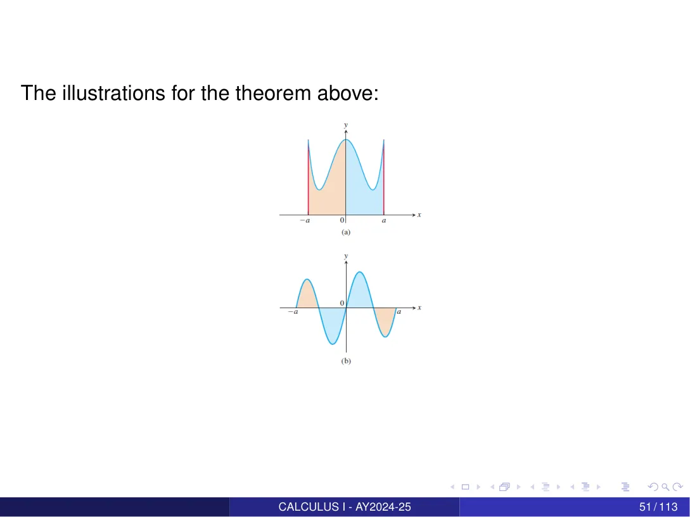
For an even function the area on the left equals the area on the right; for an odd function the left area is the negative of the right area, so they cancel. Ask the student to sketch $\cos x$ and $\sin x$ on $[-\pi,\pi]$ and say what $\int_{-\pi}^{\pi}$ gives.
Với hàm chẵn diện tích bên trái bằng bên phải; với hàm lẻ diện tích bên trái là số đối của bên phải nên triệt tiêu. Yêu cầu bạn phác $\cos x$ và $\sin x$ trên $[-\pi,\pi]$ và nói $\int_{-\pi}^{\pi}$ của chúng bằng bao nhiêu.
Integration by parts for definite integrals · Từng phần cho tích phân xác định
★★★ Core · Cốt lõi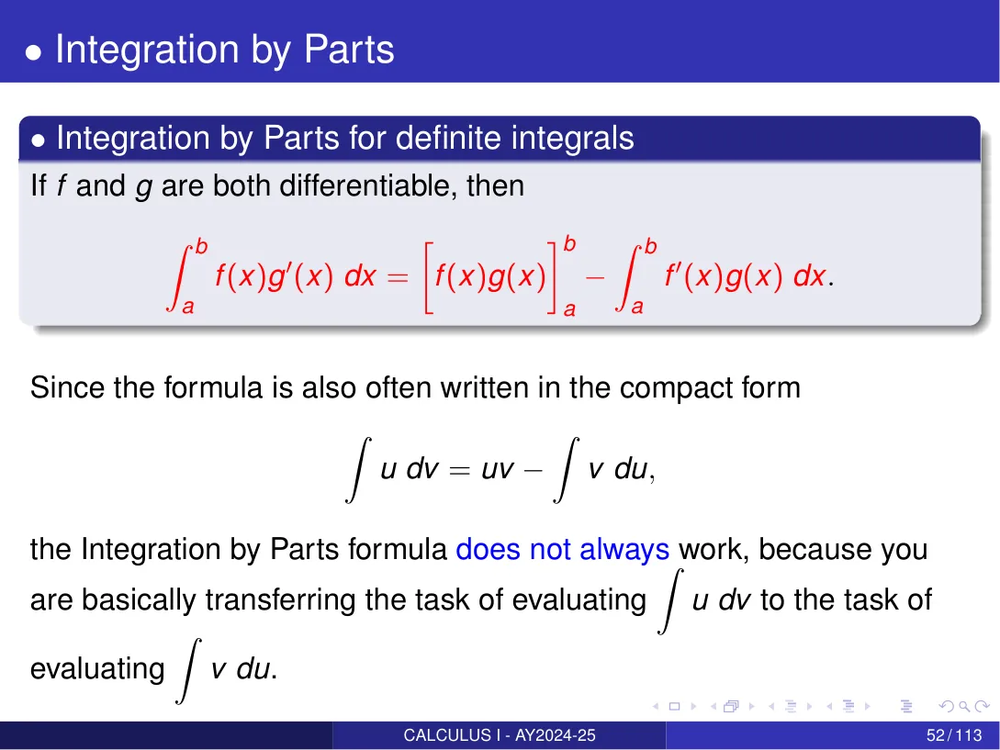
$\int_a^bf(x)g'(x)\,dx=\big[f(x)g(x)\big]_a^b-\int_a^bf'(x)g(x)\,dx$, in the compact form $\int u\,dv=uv-\int v\,du$. The slide warns that the formula does not always help: it only transfers the task from $\int u\,dv$ to $\int v\,du$, so choose $u,dv$ so that the new integral is simpler.
$\int_a^bf(x)g'(x)\,dx=\big[f(x)g(x)\big]_a^b-\int_a^bf'(x)g(x)\,dx$, dạng gọn $\int u\,dv=uv-\int v\,du$. Slide cảnh báo công thức không phải lúc nào cũng có ích: nó chỉ chuyển bài toán từ $\int u\,dv$ sang $\int v\,du$, nên phải chọn $u,dv$ để tích phân mới đơn giản hơn.
Example: $\int_1^2\ln x\,dx$ · Ví dụ: $\int_1^2\ln x\,dx$
★★★ Core · Cốt lõi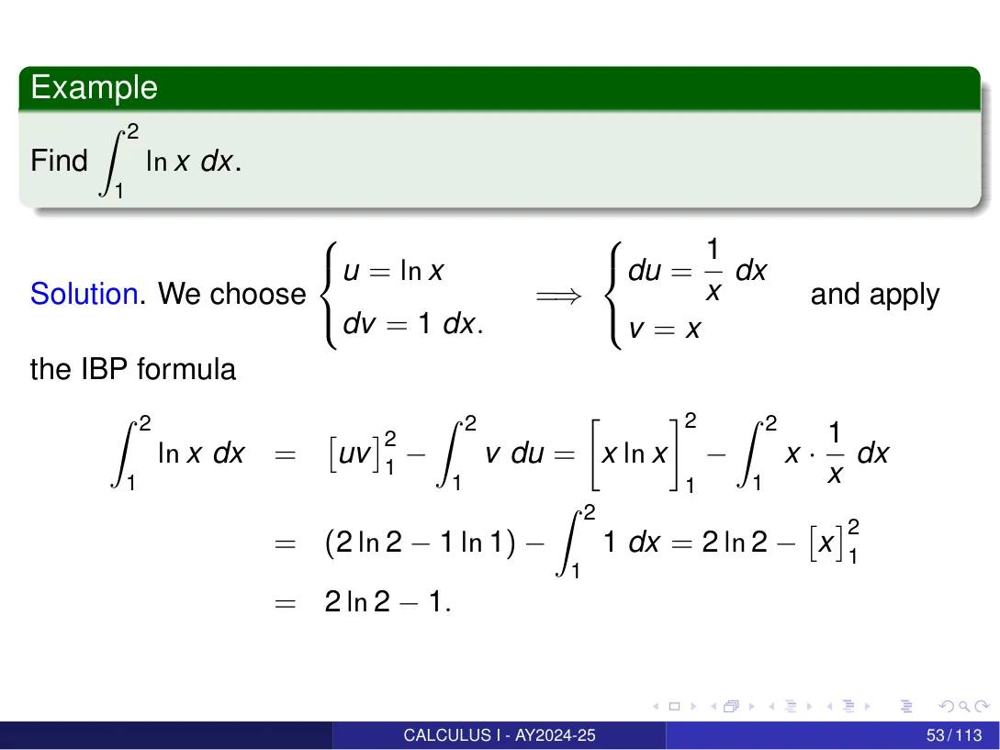
Take $u=\ln x$, $dv=1\,dx$, so $du=\frac1x\,dx$ and $v=x$. Then $\int_1^2\ln x\,dx=\big[x\ln x\big]_1^2-\int_1^2x\cdot\frac1x\,dx=(2\ln2-0)-\big[x\big]_1^2=2\ln2-1$. The trick is to see $\ln x$ as $\ln x\cdot1$.
Lấy $u=\ln x$, $dv=1\,dx$, nên $du=\frac1x\,dx$ và $v=x$. Khi đó $\int_1^2\ln x\,dx=\big[x\ln x\big]_1^2-\int_1^2x\cdot\frac1x\,dx=(2\ln2-0)-\big[x\big]_1^2=2\ln2-1$. Mẹo là viết $\ln x$ thành $\ln x\cdot1$.
Evaluate $\displaystyle\int_0^1xe^x\,dx$ and $\displaystyle\int_0^\pi x\sin x\,dx$ by parts.
Tính $\displaystyle\int_0^1xe^x\,dx$ và $\displaystyle\int_0^\pi x\sin x\,dx$ bằng từng phần.
Answer and solution · Đáp án và lời giải
Answer · Đáp án: $1$ and $\pi$
First: $u=x$, $dv=e^xdx$: $[xe^x]_0^1-\int_0^1e^xdx=e-(e-1)=1$. Second: $u=x$, $dv=\sin x\,dx$: $[-x\cos x]_0^\pi+\int_0^\pi\cos x\,dx=\pi+0=\pi$.
Thứ nhất: $u=x$, $dv=e^xdx$: $[xe^x]_0^1-\int_0^1e^xdx=e-(e-1)=1$. Thứ hai: $u=x$, $dv=\sin x\,dx$: $[-x\cos x]_0^\pi+\int_0^\pi\cos x\,dx=\pi+0=\pi$.
Roadmap: volumes · Lộ trình: thể tích
★ Context · Bổ trợ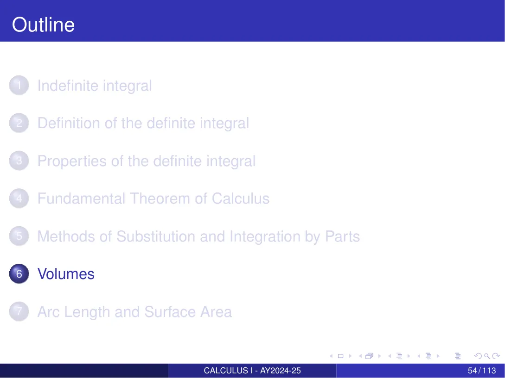
Outline, part 6: volumes.
Lộ trình, phần 6: thể tích.
From area to volume · Từ diện tích đến thể tích
★ Context · Bổ trợ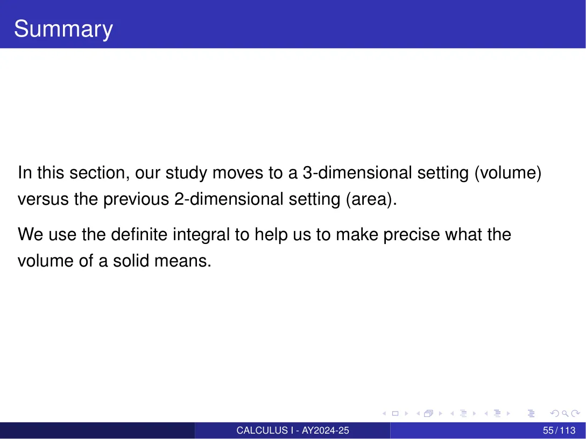
We move from two dimensions (area) to three (volume), and use the definite integral to define precisely what the volume of a solid means.
Ta chuyển từ hai chiều (diện tích) sang ba chiều (thể tích), và dùng tích phân xác định để định nghĩa chính xác thể tích của một vật thể.
Regular solids: the cylinder · Vật thể đều: hình trụ
★★ Important · Quan trọng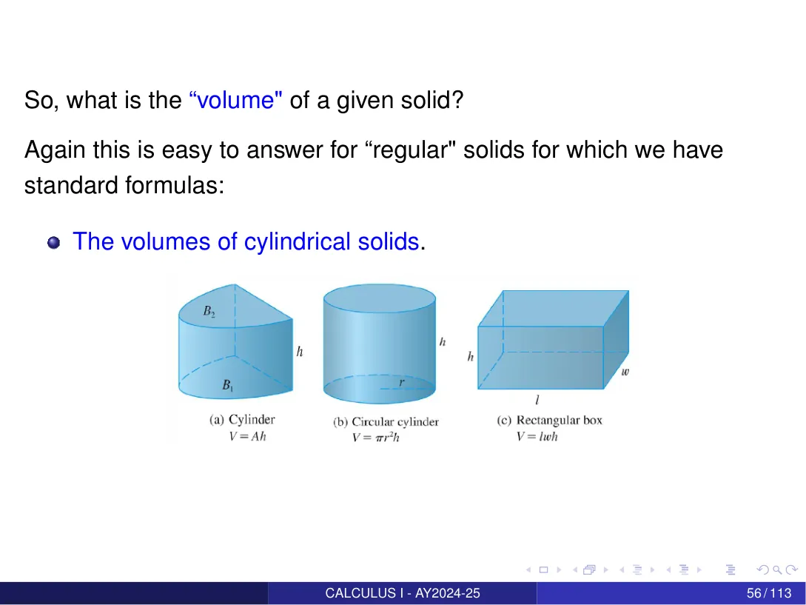
For regular solids we have formulas; the basic one is the cylinder: volume = (area of the base) $\times$ (height). Everything that follows reduces curved solids to stacks of thin cylinders.
Với vật thể đều ta có công thức; công thức cơ bản là hình trụ: thể tích = (diện tích đáy) $\times$ (chiều cao). Mọi thứ sau đó đưa vật thể cong về các chồng trụ mỏng.
Cross-sections of a solid · Mặt cắt của một vật thể
★★★ Core · Cốt lõi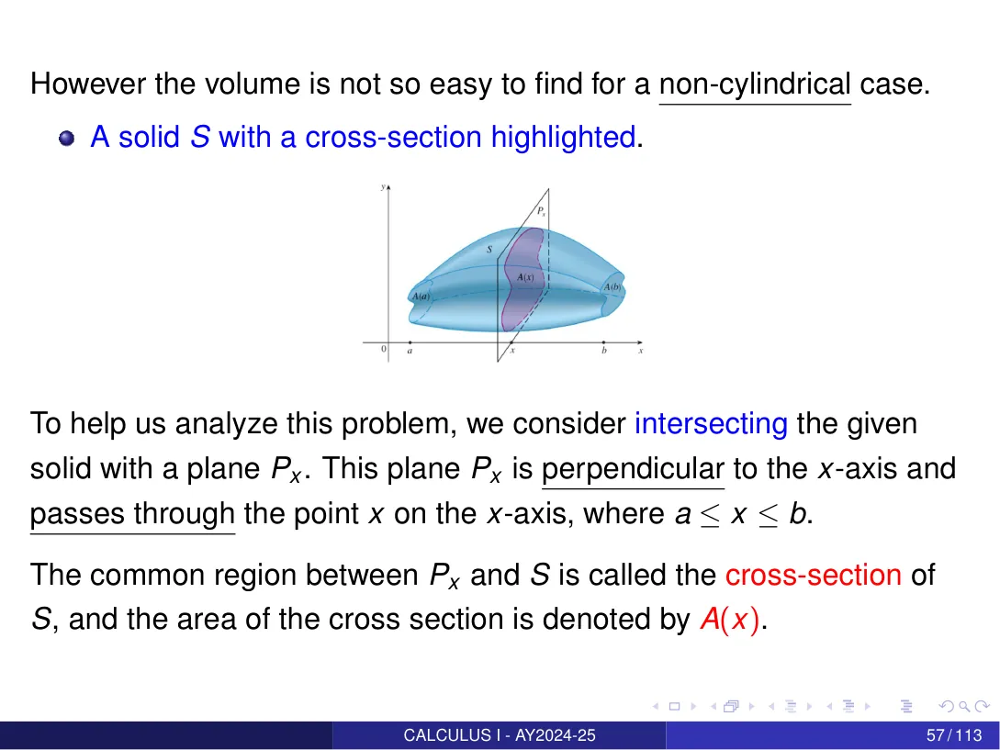
For a non-cylindrical solid $S$ intersect it with the plane $P_x$ perpendicular to the $x$-axis at the point $x$ ($a\le x\le b$). The common region is the cross-section and its area is $A(x)$, a function of $x$.
Với vật thể $S$ không phải hình trụ, cắt nó bằng mặt phẳng $P_x$ vuông góc với trục $x$ tại điểm $x$ ($a\le x\le b$). Phần chung là mặt cắt và diện tích của nó là $A(x)$, một hàm của $x$.
The volume formula $V=\int A(x)\,dx$ · Công thức thể tích $V=\int A(x)\,dx$
★★★ Core · Cốt lõi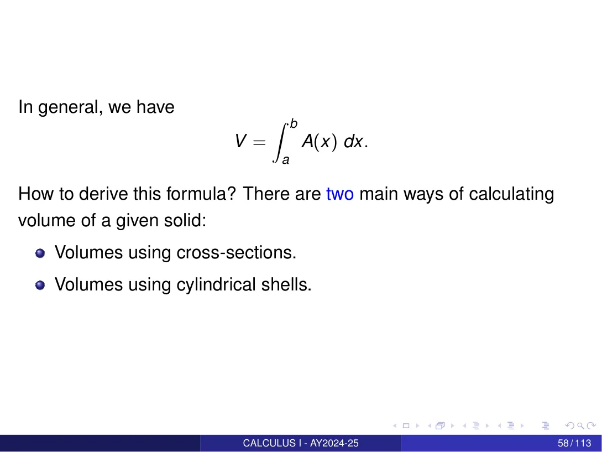
In general $V=\int_a^bA(x)\,dx$. There are two main ways to organise the computation: cross-sections (slices) and cylindrical shells. Say it in words: add up the volumes of thin slices, each of area $A(x)$ and thickness $dx$.
Tổng quát $V=\int_a^bA(x)\,dx$. Có hai cách chính để tổ chức tính toán: mặt cắt (lát cắt) và vỏ trụ. Nói bằng lời: cộng thể tích của các lát mỏng, mỗi lát có diện tích $A(x)$ và bề dày $dx$.
This single formula is behind disks, washers and shells; once the student can write $A(x)$ the rest is a routine integral.
Công thức này là nền của đĩa, vòng đệm và vỏ trụ; khi bạn viết được $A(x)$ thì phần còn lại là tích phân quen thuộc.
Volumes by cross-sections: three types · Thể tích bằng mặt cắt: ba loại
★★★ Core · Cốt lõi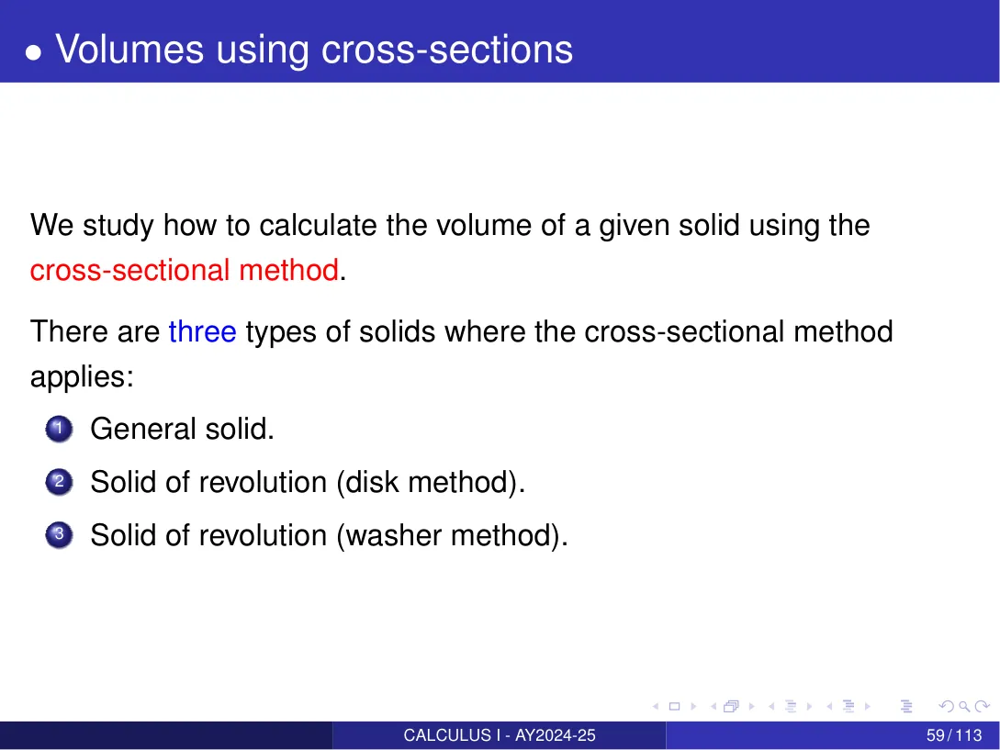
Three types where the cross-sectional method applies: (1) general solids, (2) solids of revolution by the disk method, (3) solids of revolution by the washer method.
Ba loại dùng được phương pháp mặt cắt: (1) vật thể tổng quát, (2) vật thể tròn xoay theo phương pháp đĩa, (3) vật thể tròn xoay theo phương pháp vòng đệm.
General solids · Vật thể tổng quát
★★ Important · Quan trọng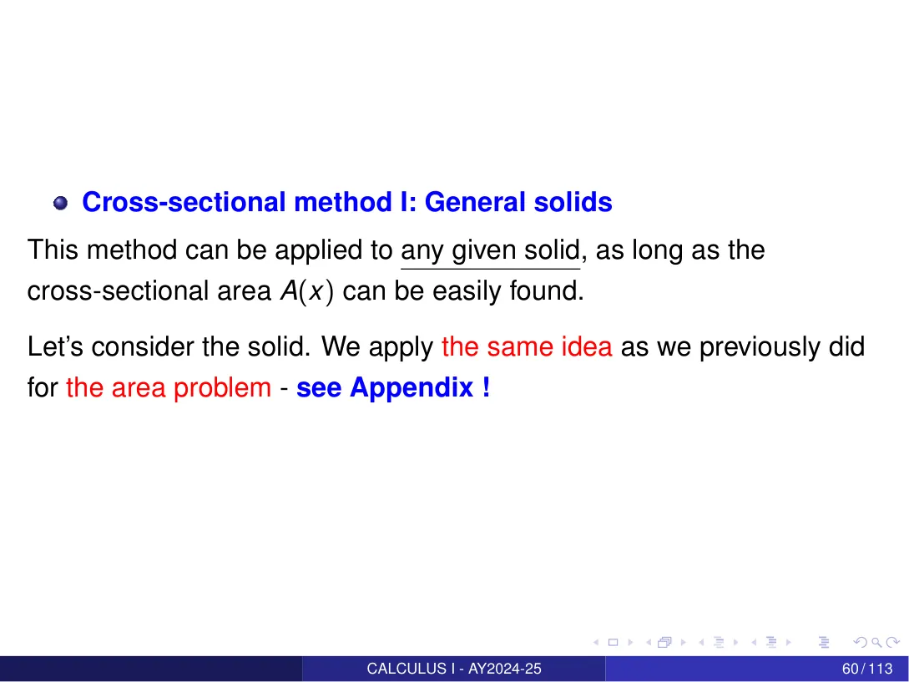
The method works for any solid as long as $A(x)$ is easy to find. It uses the same idea as for areas (divide, approximate, sum, limit); the derivation is in the appendix (slides 62–65).
Phương pháp dùng được cho mọi vật thể miễn là tìm $A(x)$ dễ. Cùng ý tưởng như diện tích (chia, xấp xỉ, cộng, giới hạn); phần chứng minh ở phụ lục (slide 62–65).
Definition of the volume · Định nghĩa thể tích
★★★ Core · Cốt lõi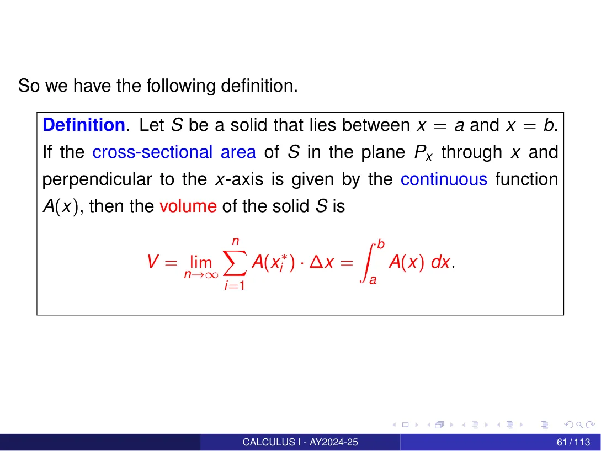
If $S$ lies between $x=a$ and $x=b$ and the cross-sectional area $A(x)$ is continuous, then $V=\lim_{n\to\infty}\sum_{i=1}^nA(x_i^*)\Delta x=\int_a^bA(x)\,dx$. The sum is a Riemann sum of $A$: this is exactly the definite integral.
Nếu $S$ nằm giữa $x=a$ và $x=b$ và diện tích mặt cắt $A(x)$ liên tục thì $V=\lim_{n\to\infty}\sum_{i=1}^nA(x_i^*)\Delta x=\int_a^bA(x)\,dx$. Tổng này là tổng Riemann của $A$: đúng là tích phân xác định.
A solid lies between $x=0$ and $x=4$ and its cross-section perpendicular to the $x$-axis is a square of side $\sqrt x$. Find its volume.
Một vật thể nằm giữa $x=0$ và $x=4$, mặt cắt vuông góc với trục $x$ là hình vuông cạnh $\sqrt x$. Tìm thể tích.
Answer and solution · Đáp án và lời giải
Answer · Đáp án: $8$
$A(x)=(\sqrt x)^2=x$, so $V=\int_0^4x\,dx=\frac{4^2}2=8$.
$A(x)=(\sqrt x)^2=x$, nên $V=\int_0^4x\,dx=\frac{4^2}2=8$.
Things to remember about $A(x)$ · Những điều cần nhớ về $A(x)$
★★★ Core · Cốt lõi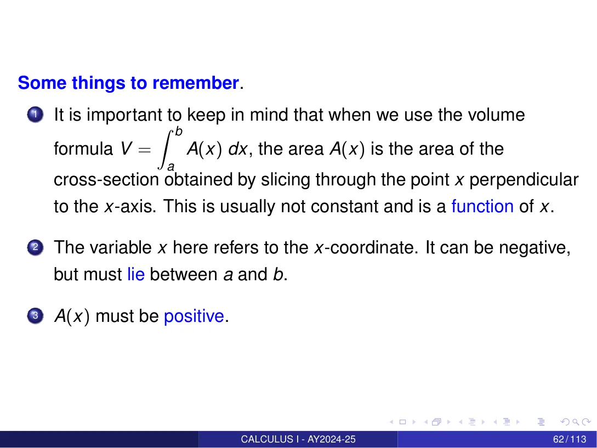
(1) $A(x)$ is the area of the slice perpendicular to the $x$-axis through $x$; it is usually not constant. (2) The variable $x$ is a coordinate: it can be negative but must lie between $a$ and $b$. (3) $A(x)$ must be positive.
(1) $A(x)$ là diện tích lát cắt vuông góc với trục $x$ tại $x$; thường không phải hằng số. (2) Biến $x$ là tọa độ: có thể âm nhưng phải nằm giữa $a$ và $b$. (3) $A(x)$ phải dương.
A pyramid of height $h$ has a square base of side $a$. At height $y$ above the base the cross-section is a square of side $a(1-y/h)$. Find the volume.
Một hình chóp cao $h$ có đáy vuông cạnh $a$. Ở độ cao $y$ trên đáy, mặt cắt là hình vuông cạnh $a(1-y/h)$. Tìm thể tích.
Answer and solution · Đáp án và lời giải
Answer · Đáp án: $\dfrac{a^2h}3$
$V=\int_0^ha^2\left(1-\frac yh\right)^2dy=a^2h\int_0^1(1-s)^2ds=\frac{a^2h}3$, the familiar $\frac13\times$ base $\times$ height.
$V=\int_0^ha^2\left(1-\frac yh\right)^2dy=a^2h\int_0^1(1-s)^2ds=\frac{a^2h}3$, đúng công thức quen thuộc $\frac13\times$ đáy $\times$ chiều cao.
Example: the volume of a sphere, setup · Ví dụ: thể tích hình cầu, thiết lập
★★★ Core · Cốt lõi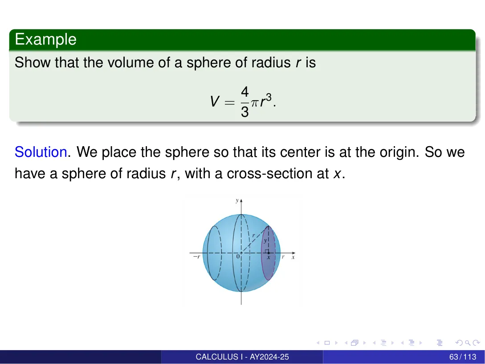
Show that a sphere of radius $r$ has $V=\frac43\pi r^3$. Put the centre at the origin; the cross-section at $x$ (between $-r$ and $r$) is a circle.
Chứng minh hình cầu bán kính $r$ có $V=\frac43\pi r^3$. Đặt tâm tại gốc tọa độ; mặt cắt tại $x$ (giữa $-r$ và $r$) là một hình tròn.
The sphere: the integral · Hình cầu: phép tính tích phân
★★★ Core · Cốt lõi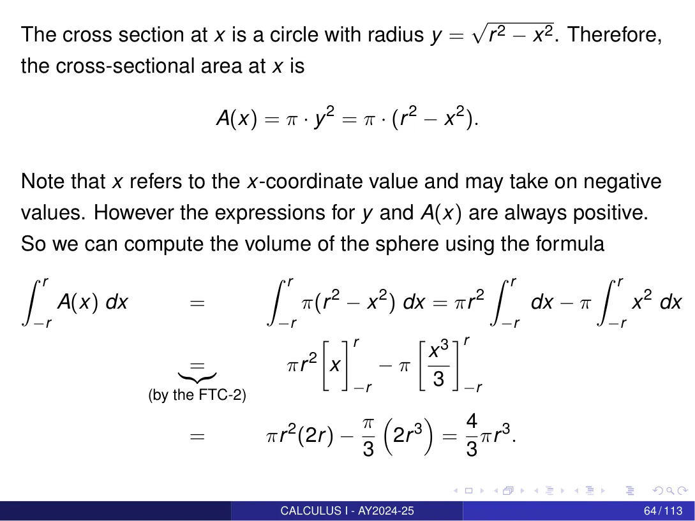
The circle at $x$ has radius $y=\sqrt{r^2-x^2}$, so $A(x)=\pi(r^2-x^2)$ (positive even for negative $x$). Then $V=\int_{-r}^r\pi(r^2-x^2)dx=\pi\left[r^2x-\frac{x^3}3\right]_{-r}^{r}=\pi r^2(2r)-\frac\pi3(2r^3)=\frac43\pi r^3$.
Hình tròn tại $x$ có bán kính $y=\sqrt{r^2-x^2}$ nên $A(x)=\pi(r^2-x^2)$ (dương kể cả khi $x$ âm). Khi đó $V=\int_{-r}^r\pi(r^2-x^2)dx=\pi\left[r^2x-\frac{x^3}3\right]_{-r}^{r}=\pi r^2(2r)-\frac\pi3(2r^3)=\frac43\pi r^3$.
Check the sphere formula with the integral for a general radius $r$.
Kiểm tra công thức hình cầu bằng tích phân với bán kính $r$ bất kỳ.
Answer and solution · Đáp án và lời giải
Answer · Đáp án: $\dfrac43\pi r^3$
$\int_{-r}^r\pi(r^2-x^2)dx=\pi\left(2r^3-\frac{2r^3}3\right)=\frac43\pi r^3$.
$\int_{-r}^r\pi(r^2-x^2)dx=\pi\left(2r^3-\frac{2r^3}3\right)=\frac43\pi r^3$.
Solids of revolution: the disk method · Vật thể tròn xoay: phương pháp đĩa
★★★ Core · Cốt lõi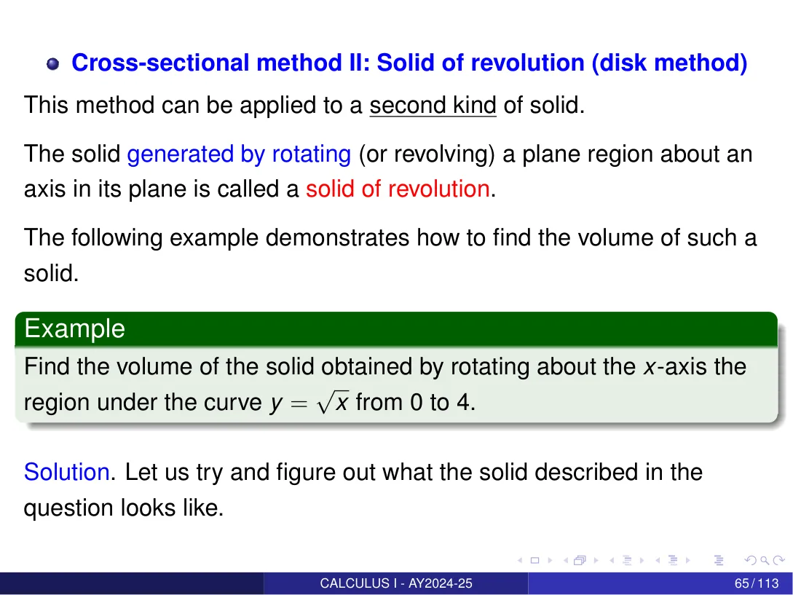
A solid of revolution is obtained by rotating a plane region about an axis in its plane. Example: rotate the region under $y=\sqrt x$, $0\le x\le4$, about the $x$-axis. First picture what the solid looks like.
Vật thể tròn xoay nhận được khi quay một miền phẳng quanh một trục nằm trong mặt phẳng của nó. Ví dụ: quay miền dưới $y=\sqrt x$, $0\le x\le4$, quanh trục $x$. Trước hết hình dung vật thể trông thế nào.
The region and the solid · Miền phẳng và vật thể
★★ Important · Quan trọng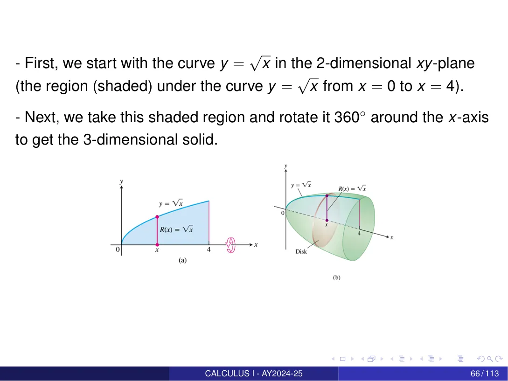
Start with the shaded region under $y=\sqrt x$ in the plane, then rotate it $360^\circ$ about the $x$-axis to get a trumpet-shaped solid.
Bắt đầu với miền tô màu dưới $y=\sqrt x$ trong mặt phẳng, rồi quay $360^\circ$ quanh trục $x$ được vật thể hình kèn.
The disk computation · Tính thể tích bằng đĩa
★★★ Core · Cốt lõi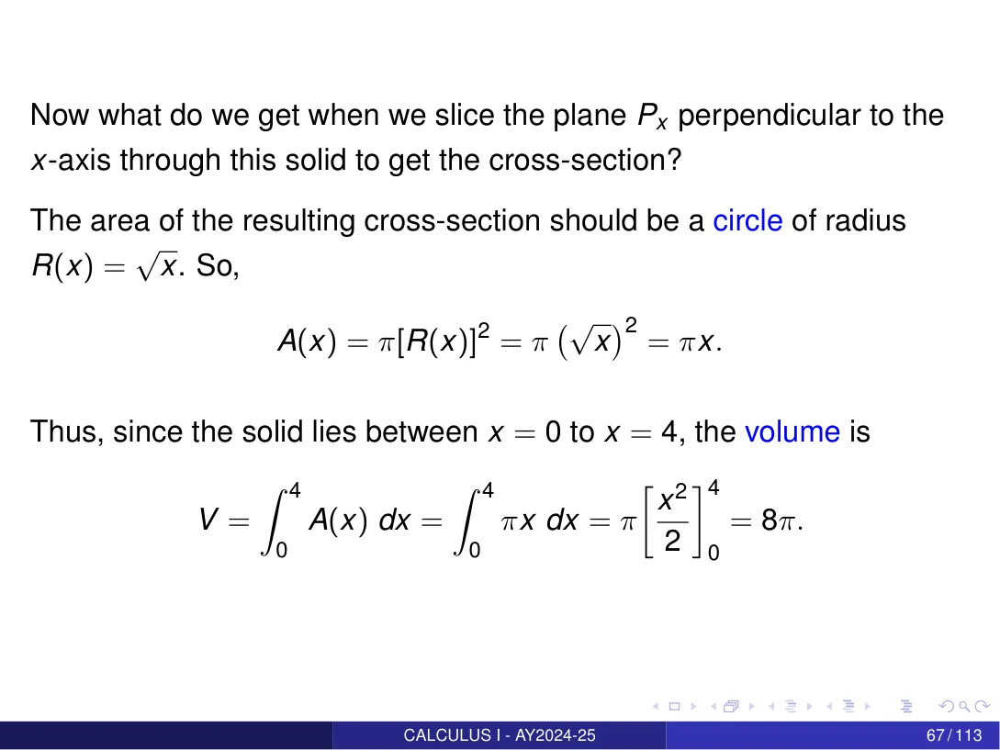
A slice perpendicular to the $x$-axis is a disk of radius $R(x)=\sqrt x$, so $A(x)=\pi[R(x)]^2=\pi x$. Then $V=\int_0^4\pi x\,dx=\pi\frac{x^2}2\Big|_0^4=8\pi$.
Lát cắt vuông góc với trục $x$ là một đĩa bán kính $R(x)=\sqrt x$ nên $A(x)=\pi[R(x)]^2=\pi x$. Khi đó $V=\int_0^4\pi x\,dx=\pi\frac{x^2}2\Big|_0^4=8\pi$.
Rotate the region under $y=x^2$, $0\le x\le1$, about the $x$-axis. Find the volume.
Quay miền dưới $y=x^2$, $0\le x\le1$, quanh trục $x$. Tìm thể tích.
Answer and solution · Đáp án và lời giải
Answer · Đáp án: $\dfrac\pi5$
Disk of radius $x^2$: $A=\pi x^4$, so $V=\int_0^1\pi x^4dx=\frac\pi5$.
Đĩa bán kính $x^2$: $A=\pi x^4$, nên $V=\int_0^1\pi x^4dx=\frac\pi5$.
Rotation about the $y$-axis · Quay quanh trục $y$
★★★ Core · Cốt lõi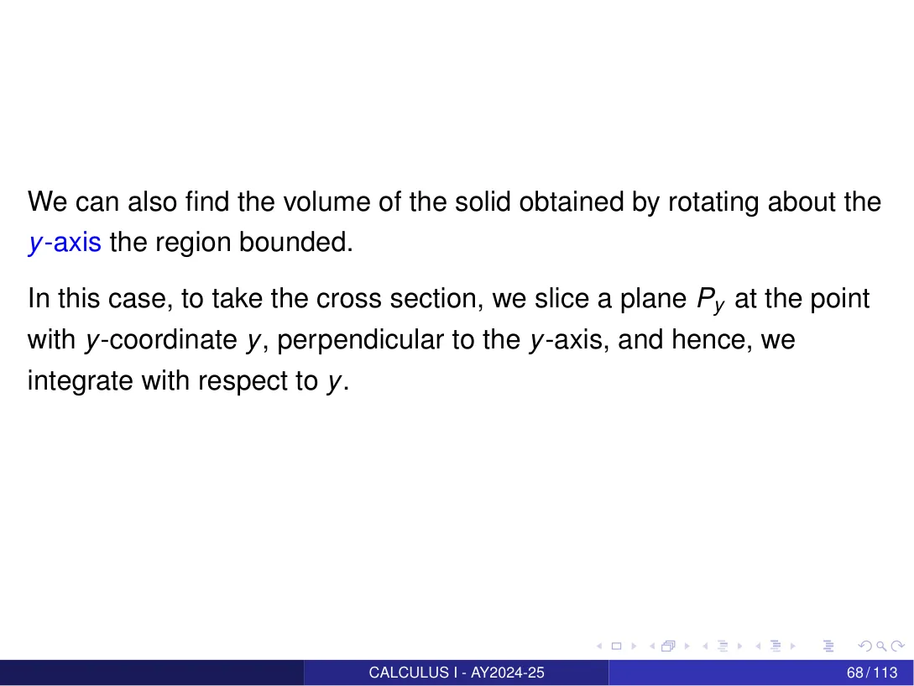
To rotate about the $y$-axis by disks, slice with a plane $P_y$ perpendicular to the $y$-axis at height $y$, and integrate with respect to $y$. The radius is then a function of $y$.
Để quay quanh trục $y$ bằng đĩa, cắt bằng mặt phẳng $P_y$ vuông góc với trục $y$ tại độ cao $y$, và lấy tích phân theo $y$. Khi đó bán kính là hàm của $y$.
The region bounded by $x=y^2$, the $y$-axis and $y=2$ is rotated about the $y$-axis. Find the volume with disks.
Miền giới hạn bởi $x=y^2$, trục $y$ và $y=2$ được quay quanh trục $y$. Tìm thể tích bằng đĩa.
Answer and solution · Đáp án và lời giải
Answer · Đáp án: $\dfrac{32\pi}5$
Disks perpendicular to the $y$-axis have radius $y^2$: $V=\int_0^2\pi(y^2)^2dy=\pi\frac{2^5}5=\frac{32\pi}5$.
Các đĩa vuông góc với trục $y$ có bán kính $y^2$: $V=\int_0^2\pi(y^2)^2dy=\pi\frac{2^5}5=\frac{32\pi}5$.
Summary of the disk formulas · Tóm tắt công thức đĩa
★★★ Core · Cốt lõi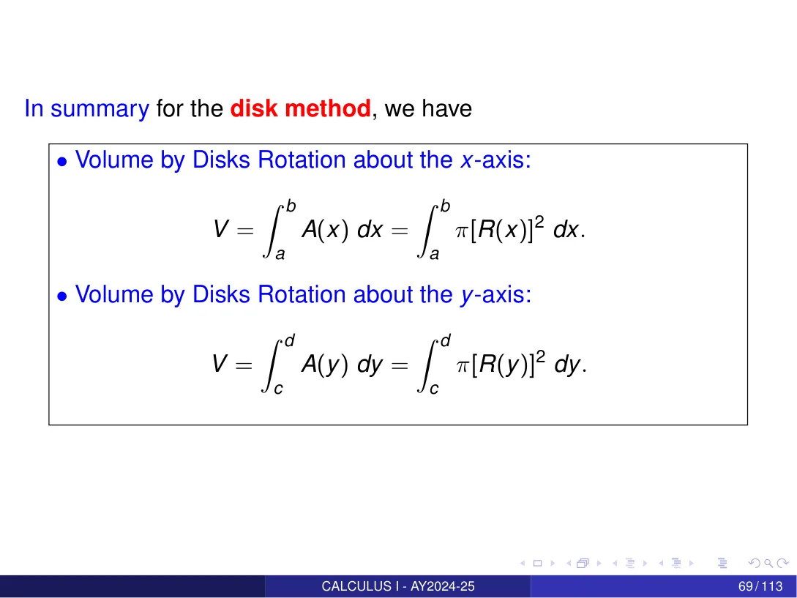
About the $x$-axis: $V=\int_a^bA(x)\,dx=\int_a^b\pi[R(x)]^2dx$. About the $y$-axis: $V=\int_c^dA(y)\,dy=\int_c^d\pi[R(y)]^2dy$. The radius $R$ is the distance from the axis of rotation to the curve.
Quanh trục $x$: $V=\int_a^bA(x)\,dx=\int_a^b\pi[R(x)]^2dx$. Quanh trục $y$: $V=\int_c^dA(y)\,dy=\int_c^d\pi[R(y)]^2dy$. Bán kính $R$ là khoảng cách từ trục quay đến đường cong.
The washer method · Phương pháp vòng đệm
★★★ Core · Cốt lõi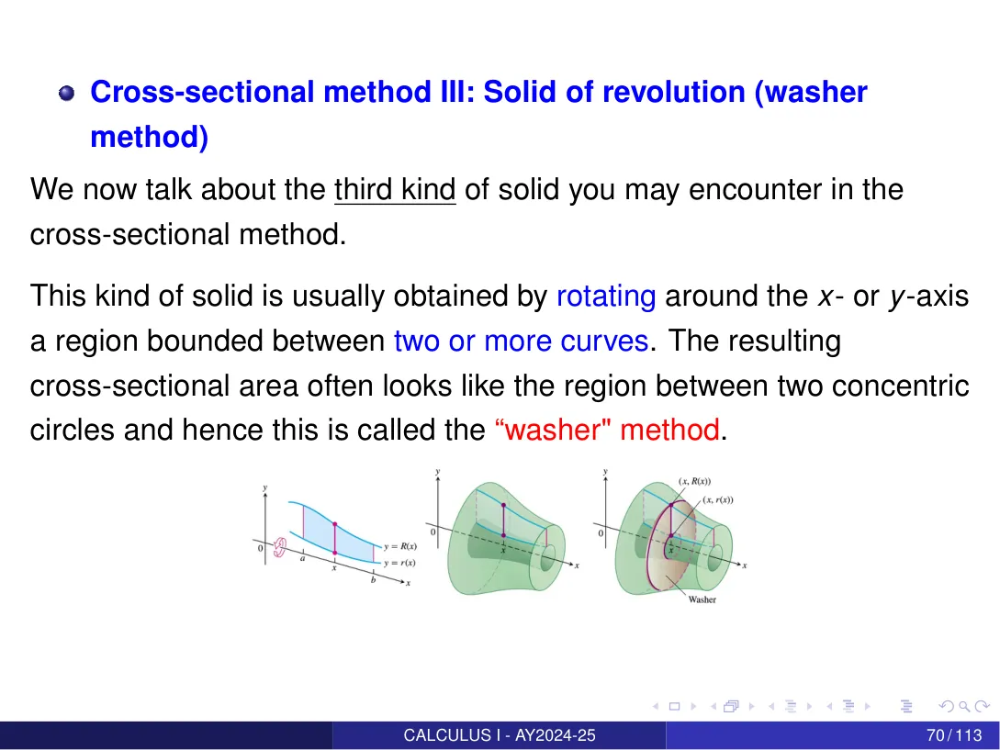
When the region is between two curves, the cross-section is a ring between two concentric circles, a washer. Its area is $\pi R^2-\pi r^2$, outer radius minus inner radius squared, never $\pi(R-r)^2$.
Khi miền nằm giữa hai đường cong, mặt cắt là một vành giữa hai đường tròn đồng tâm, một vòng đệm. Diện tích là $\pi R^2-\pi r^2$, bình phương bán kính ngoài trừ bình phương bán kính trong, không bao giờ là $\pi(R-r)^2$.
Example: $y=x$ and $y=x^2$ about the $x$-axis, setup · Ví dụ: $y=x$ và $y=x^2$ quanh trục $x$, thiết lập
★★★ Core · Cốt lõi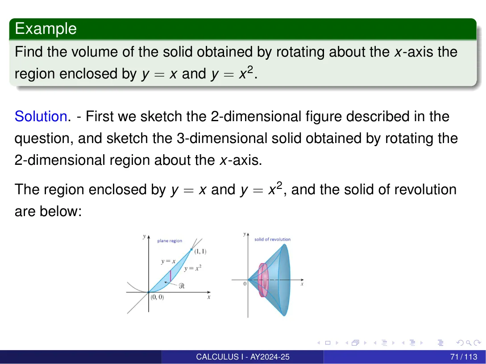
Rotate the region enclosed by $y=x$ and $y=x^2$ (between $x=0$ and $x=1$) about the $x$-axis. Sketch the region and the solid; slice perpendicular to the $x$-axis: the slice is a washer with outer radius $x$ and inner radius $x^2$ (on $[0,1]$ we have $x^2\le x$).
Quay miền giới hạn bởi $y=x$ và $y=x^2$ (giữa $x=0$ và $x=1$) quanh trục $x$. Phác miền và vật thể; cắt vuông góc với trục $x$: lát cắt là vòng đệm có bán kính ngoài $x$ và bán kính trong $x^2$ (trên $[0,1]$ có $x^2\le x$).
The washer's cross-sectional area · Diện tích mặt cắt của vòng đệm
★★★ Core · Cốt lõi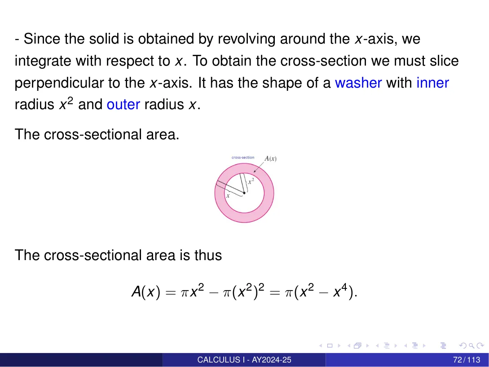
$A(x)=\pi x^2-\pi(x^2)^2=\pi(x^2-x^4)$: the area of the big disk minus the area of the hole.
$A(x)=\pi x^2-\pi(x^2)^2=\pi(x^2-x^4)$: diện tích đĩa lớn trừ diện tích lỗ.
The washer volume and the formula · Thể tích vòng đệm và công thức
★★★ Core · Cốt lõi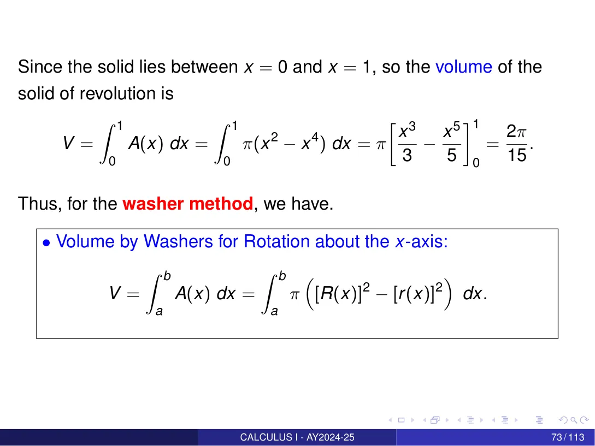
$V=\int_0^1\pi(x^2-x^4)dx=\pi\left[\frac{x^3}3-\frac{x^5}5\right]_0^1=\frac{2\pi}{15}$. General formula about the $x$-axis: $V=\int_a^b\pi\left([R(x)]^2-[r(x)]^2\right)dx$.
$V=\int_0^1\pi(x^2-x^4)dx=\pi\left[\frac{x^3}3-\frac{x^5}5\right]_0^1=\frac{2\pi}{15}$. Công thức tổng quát quanh trục $x$: $V=\int_a^b\pi\left([R(x)]^2-[r(x)]^2\right)dx$.
Rotate the region between $y=x^2$ and $y=2x$ about the $x$-axis. Find the volume.
Quay miền giữa $y=x^2$ và $y=2x$ quanh trục $x$. Tìm thể tích.
Answer and solution · Đáp án và lời giải
Answer · Đáp án: $\dfrac{64\pi}{15}$
The curves meet at $x=0$ and $x=2$; on $[0,2]$ the outer curve is $y=2x$ and the inner is $y=x^2$: $V=\pi\int_0^2(4x^2-x^4)dx=\pi\left(\frac{32}3-\frac{32}5\right)=\frac{64\pi}{15}$.
Hai đường cắt nhau tại $x=0$ và $x=2$; trên $[0,2]$ đường ngoài là $y=2x$ và đường trong là $y=x^2$: $V=\pi\int_0^2(4x^2-x^4)dx=\pi\left(\frac{32}3-\frac{32}5\right)=\frac{64\pi}{15}$.
Cylindrical shells: the idea · Vỏ trụ: ý tưởng
★★★ Core · Cốt lõi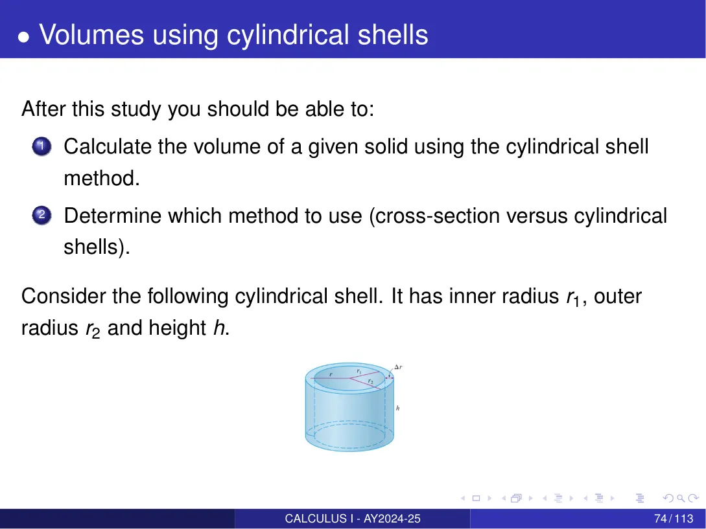
After this part the student can compute volumes with cylindrical shells and decide between shells and cross-sections. A shell has inner radius $r_1$, outer radius $r_2$ and height $h$.
Sau phần này bạn tính được thể tích bằng vỏ trụ và biết chọn giữa vỏ trụ và mặt cắt. Một vỏ trụ có bán kính trong $r_1$, bán kính ngoài $r_2$ và chiều cao $h$.
The volume of one shell · Thể tích của một vỏ trụ
★★★ Core · Cốt lõi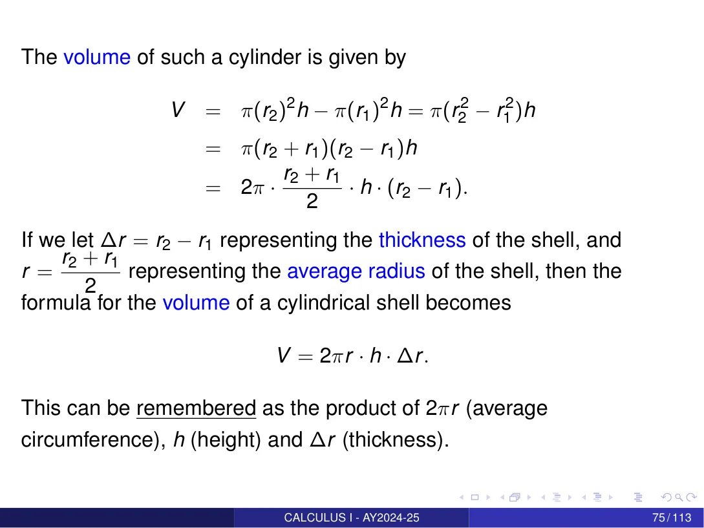
$V=\pi r_2^2h-\pi r_1^2h=\pi(r_2+r_1)(r_2-r_1)h=2\pi\cdot\frac{r_1+r_2}2\cdot h\cdot(r_2-r_1)$. With average radius $r$ and thickness $\Delta r$: $V=2\pi r\,h\,\Delta r$ = (average circumference) $\times$ (height) $\times$ (thickness).
$V=\pi r_2^2h-\pi r_1^2h=\pi(r_2+r_1)(r_2-r_1)h=2\pi\cdot\frac{r_1+r_2}2\cdot h\cdot(r_2-r_1)$. Với bán kính trung bình $r$ và bề dày $\Delta r$: $V=2\pi r\,h\,\Delta r$ = (chu vi trung bình) $\times$ (chiều cao) $\times$ (bề dày).
A shell has inner radius $1$, outer radius $2$ and height $3$. Find its volume in two ways.
Một vỏ trụ có bán kính trong $1$, bán kính ngoài $2$ và chiều cao $3$. Tìm thể tích theo hai cách.
Answer and solution · Đáp án và lời giải
Answer · Đáp án: $9\pi$
Difference of cylinders: $\pi(2^2-1^2)\cdot3=9\pi$. Shell formula: $2\pi\cdot\frac32\cdot3\cdot1=9\pi$.
Hiệu hai hình trụ: $\pi(2^2-1^2)\cdot3=9\pi$. Công thức vỏ trụ: $2\pi\cdot\frac32\cdot3\cdot1=9\pi$.
The question: rotate the region under $y=f(x)$ about the $y$-axis · Câu hỏi: quay miền dưới $y=f(x)$ quanh trục $y$
★★ Important · Quan trọng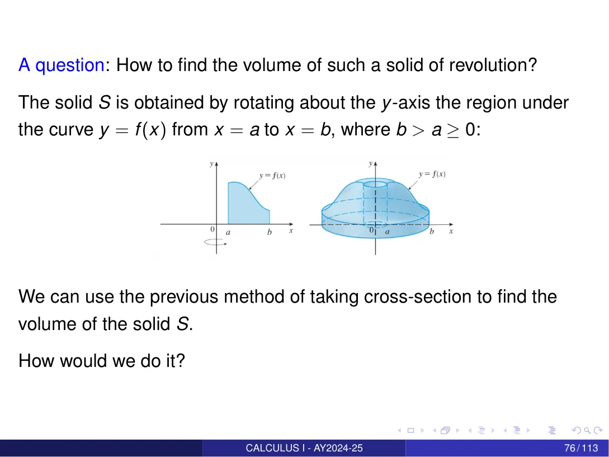
$S$ is obtained by rotating the region under $y=f(x)$ from $x=a$ to $x=b$ ($b>a\ge0$) about the $y$-axis. Slicing perpendicular to the $y$-axis would mean solving $y=f(x)$ for $x$, which is often hard: is there an alternative?
$S$ nhận được bằng cách quay miền dưới $y=f(x)$ từ $x=a$ đến $x=b$ ($b>a\ge0$) quanh trục $y$. Cắt vuông góc với trục $y$ nghĩa là phải giải $y=f(x)$ theo $x$, thường rất khó: có cách khác không?
The shell method and an example · Phương pháp vỏ trụ và một ví dụ
★★★ Core · Cốt lõi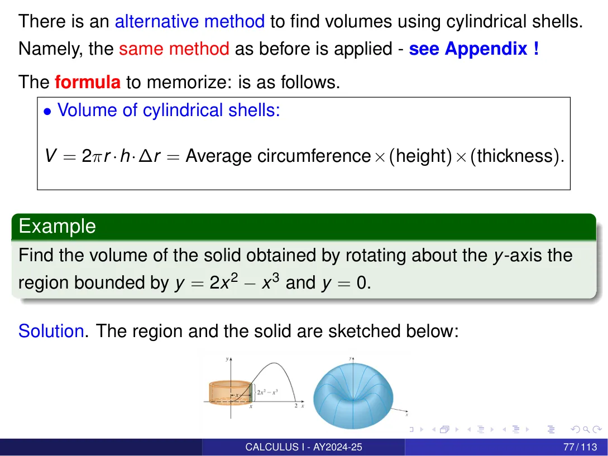
Formula: $V=\int_a^b2\pi\,x\,f(x)\,dx$: each vertical strip at $x$ rotates into a shell of radius $x$, height $f(x)$ and thickness $dx$. Example: rotate the region bounded by $y=2x^2-x^3$ and $y=0$ about the $y$-axis; the curve is above the axis for $0\le x\le2$.
Công thức: $V=\int_a^b2\pi\,x\,f(x)\,dx$: mỗi dải đứng tại $x$ quay thành một vỏ trụ bán kính $x$, cao $f(x)$ và dày $dx$. Ví dụ: quay miền giới hạn bởi $y=2x^2-x^3$ và $y=0$ quanh trục $y$; đường cong nằm trên trục khi $0\le x\le2$.
The shell computation · Tính bằng vỏ trụ
★★★ Core · Cốt lõi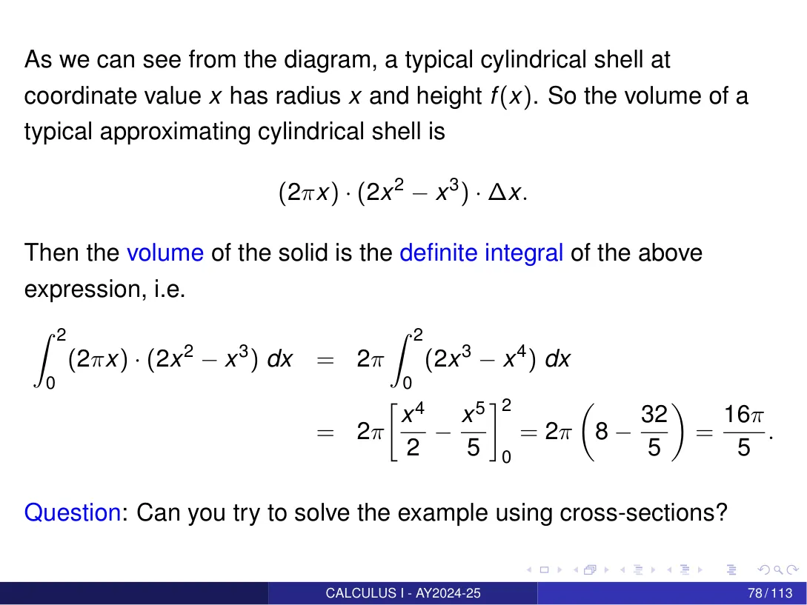
A typical shell has radius $x$ and height $2x^2-x^3$, so its volume is $(2\pi x)(2x^2-x^3)\Delta x$. $V=2\pi\int_0^2(2x^3-x^4)dx=2\pi\left[\frac{x^4}2-\frac{x^5}5\right]_0^2=2\pi\left(8-\frac{32}5\right)=\frac{16\pi}5$. (With cross-sections you would have to solve a cubic for $x$: the shell method is the practical one.)
Một vỏ trụ điển hình có bán kính $x$ và chiều cao $2x^2-x^3$, nên thể tích là $(2\pi x)(2x^2-x^3)\Delta x$. $V=2\pi\int_0^2(2x^3-x^4)dx=2\pi\left[\frac{x^4}2-\frac{x^5}5\right]_0^2=2\pi\left(8-\frac{32}5\right)=\frac{16\pi}5$. (Với mặt cắt bạn phải giải phương trình bậc ba theo $x$: vỏ trụ mới là cách thực tế.)
Use shells to find the volume when the region under $y=x^2$, $0\le x\le2$, is rotated about the $y$-axis, and check the slide's $\frac{16\pi}5$.
Dùng vỏ trụ tìm thể tích khi quay miền dưới $y=x^2$, $0\le x\le2$, quanh trục $y$, và kiểm tra giá trị $\frac{16\pi}5$ của slide.
Answer and solution · Đáp án và lời giải
Answer · Đáp án: $8\pi$; and $\dfrac{16\pi}5$ for the slide
$\int_0^22\pi x\cdot x^2dx=2\pi\frac{2^4}4=8\pi$. For the slide: $2\pi\int_0^2(2x^3-x^4)dx=2\pi\left(8-\frac{32}5\right)=\frac{16\pi}5$.
$\int_0^22\pi x\cdot x^2dx=2\pi\frac{2^4}4=8\pi$. Với slide: $2\pi\int_0^2(2x^3-x^4)dx=2\pi\left(8-\frac{32}5\right)=\frac{16\pi}5$.
Cross-sections or shells: which to use? · Mặt cắt hay vỏ trụ: dùng cái nào?
★★★ Core · Cốt lõi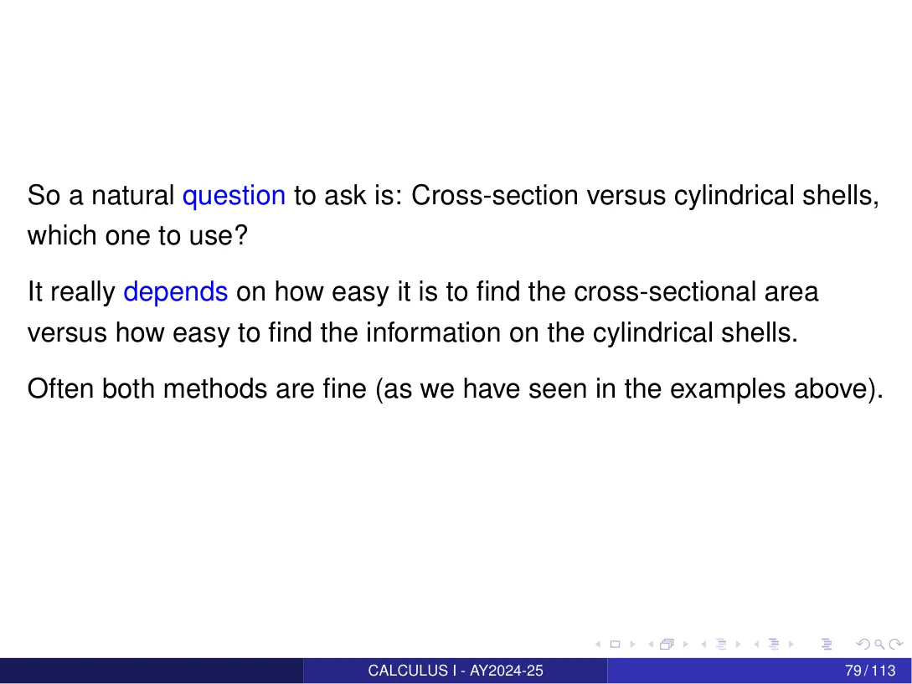
It depends on how easy it is to find the cross-sectional area versus the shell data. Often both work (as in the examples); sometimes only one is practical.
Tùy vào việc tìm diện tích mặt cắt dễ hơn hay tìm dữ liệu vỏ trụ dễ hơn. Thường cả hai đều dùng được (như trong các ví dụ); đôi khi chỉ một cách là thực tế.
The guideline: slice perpendicular, shell parallel · Quy tắc: cắt vuông góc, vỏ trụ song song
★★★ Core · Cốt lõi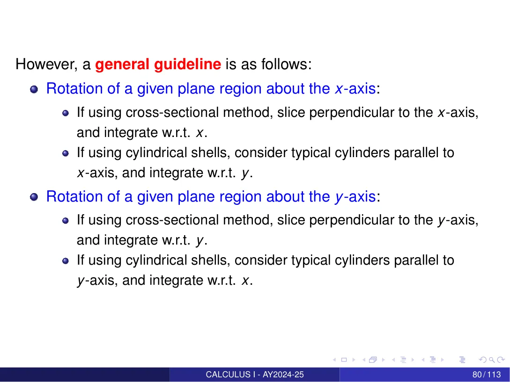
Rotation about the $x$-axis: slices perpendicular to the $x$-axis, integrate in $x$; shells parallel to the $x$-axis, integrate in $y$. Rotation about the $y$-axis: slices perpendicular to the $y$-axis, integrate in $y$; shells parallel to the $y$-axis, integrate in $x$. Memory aid: with shells, the variable of integration is the other axis.
Quay quanh trục $x$: lát cắt vuông góc với trục $x$, tích phân theo $x$; vỏ trụ song song với trục $x$, tích phân theo $y$. Quay quanh trục $y$: lát cắt vuông góc với trục $y$, tích phân theo $y$; vỏ trụ song song với trục $y$, tích phân theo $x$. Mẹo nhớ: với vỏ trụ, biến lấy tích phân là trục còn lại.
Roadmap: arc length and surface area · Lộ trình: độ dài cung và diện tích mặt
★ Context · Bổ trợ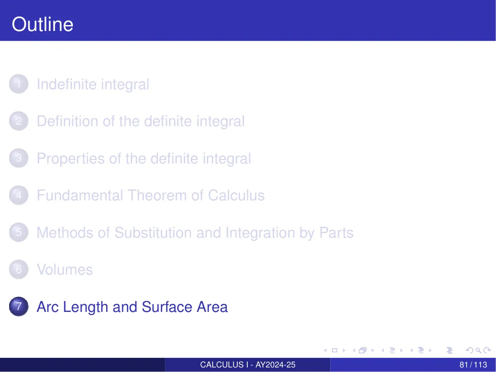
Outline, part 7: arc length and surface area.
Lộ trình, phần 7: độ dài cung và diện tích mặt.
The idea of arc length · Ý tưởng về độ dài cung
★★ Important · Quan trọng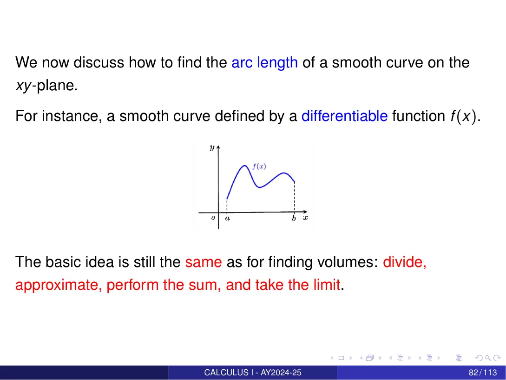
To find the length of a smooth curve $y=f(x)$ use the same basic idea as for volumes: divide, approximate by straight pieces, add, take the limit.
Để tìm độ dài đường cong trơn $y=f(x)$ dùng cùng ý tưởng như thể tích: chia, xấp xỉ bằng các đoạn thẳng, cộng lại, lấy giới hạn.
Length of a straight segment: setup · Độ dài đoạn thẳng: thiết lập
★★ Important · Quan trọng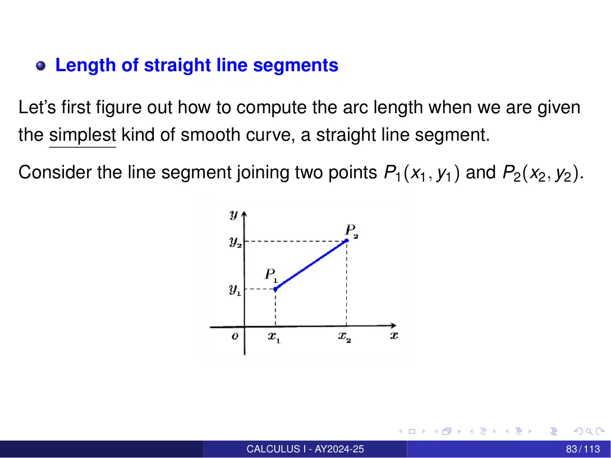
Start with the simplest smooth curve, a straight line segment joining $P_1(x_1,y_1)$ and $P_2(x_2,y_2)$.
Bắt đầu với đường cong trơn đơn giản nhất, một đoạn thẳng nối $P_1(x_1,y_1)$ và $P_2(x_2,y_2)$.
The distance formula · Công thức khoảng cách
★★ Important · Quan trọng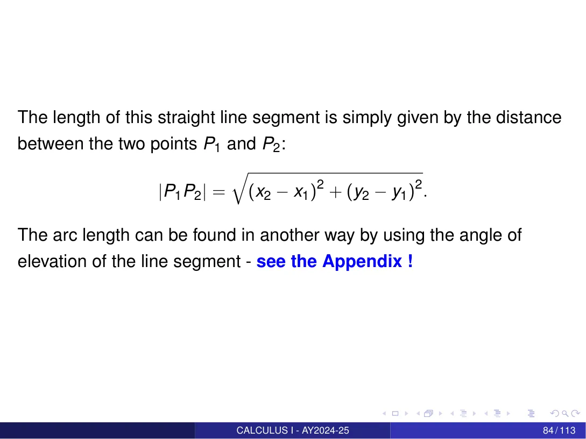
$|P_1P_2|=\sqrt{(x_2-x_1)^2+(y_2-y_1)^2}$. The same length can be expressed with the angle of elevation (next slides, appendix style).
$|P_1P_2|=\sqrt{(x_2-x_1)^2+(y_2-y_1)^2}$. Cùng độ dài này có thể biểu diễn bằng góc nghiêng (các slide sau).
Find the length of the segment from $(1,2)$ to $(4,6)$.
Tìm độ dài đoạn thẳng từ $(1,2)$ đến $(4,6)$.
Answer and solution · Đáp án và lời giải
Answer · Đáp án: $5$
$\sqrt{(4-1)^2+(6-2)^2}=\sqrt{9+16}=5$.
$\sqrt{(4-1)^2+(6-2)^2}=\sqrt{9+16}=5$.
The segment using the angle of elevation · Đoạn thẳng qua góc nghiêng
★★ Important · Quan trọng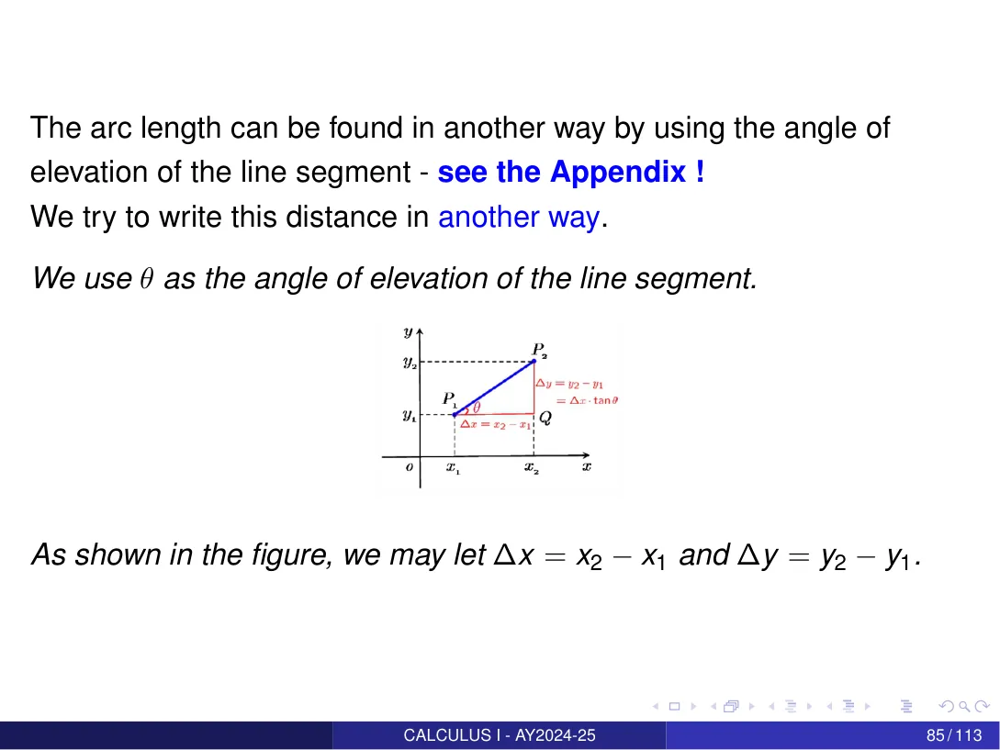
Let $\theta$ be the angle of elevation and $\Delta x=x_2-x_1$, $\Delta y=y_2-y_1$. The length is $\sqrt{(\Delta x)^2+(\Delta y)^2}$ and $\tan\theta=\frac{\Delta y}{\Delta x}$ is the slope.
Gọi $\theta$ là góc nghiêng và $\Delta x=x_2-x_1$, $\Delta y=y_2-y_1$. Độ dài là $\sqrt{(\Delta x)^2+(\Delta y)^2}$ và $\tan\theta=\frac{\Delta y}{\Delta x}$ là hệ số góc.
The length written with the slope · Độ dài viết theo hệ số góc
★★★ Core · Cốt lõi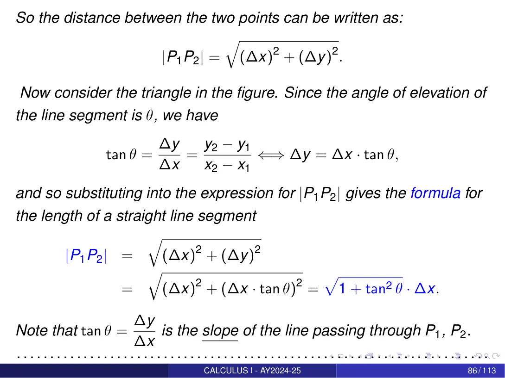
Since $\Delta y=\Delta x\tan\theta$, $|P_1P_2|=\sqrt{(\Delta x)^2+(\Delta x\tan\theta)^2}=\sqrt{1+\tan^2\theta}\,\Delta x$, where $\tan\theta$ is the slope of the line: length = $\sqrt{1+m^2}\,\Delta x$.
Vì $\Delta y=\Delta x\tan\theta$, $|P_1P_2|=\sqrt{(\Delta x)^2+(\Delta x\tan\theta)^2}=\sqrt{1+\tan^2\theta}\,\Delta x$, trong đó $\tan\theta$ là hệ số góc của đường thẳng: độ dài = $\sqrt{1+m^2}\,\Delta x$.
Deriving the arc length: divide the arc (self-study) · Chứng minh độ dài cung: chia cung (tự học)
★★ Important · Quan trọng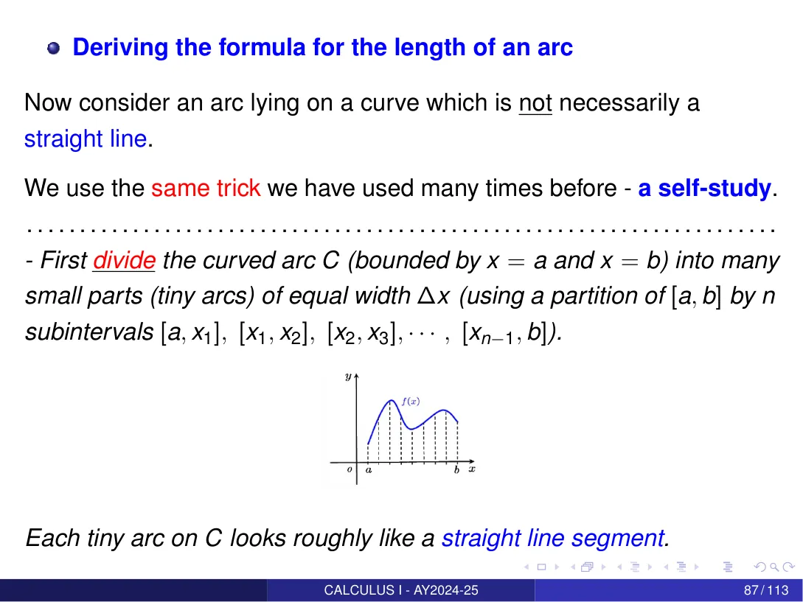
Divide the arc between $x=a$ and $x=b$ into $n$ small arcs of equal width $\Delta x$; each tiny arc looks like a straight segment.
Chia cung giữa $x=a$ và $x=b$ thành $n$ cung nhỏ cùng bề rộng $\Delta x$; mỗi cung nhỏ trông gần như một đoạn thẳng.
Approximating a tiny arc by a tangent segment · Xấp xỉ một cung nhỏ bằng đoạn tiếp tuyến
★★ Important · Quan trọng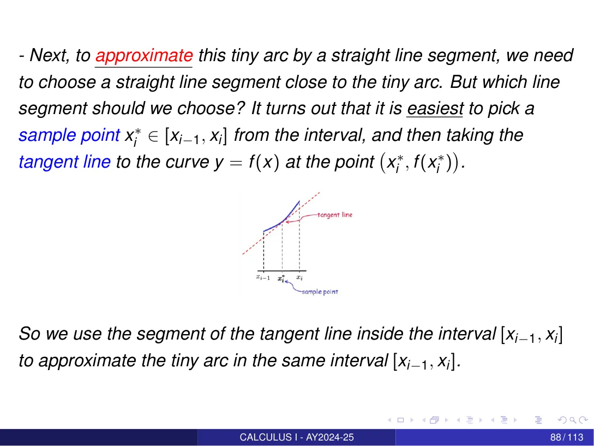
Pick a sample point $x_i^*$ in each subinterval and use the piece of the tangent line at $(x_i^*,f(x_i^*))$ over that subinterval as the approximating segment.
Chọn một điểm lấy mẫu $x_i^*$ trong mỗi đoạn con và dùng phần tiếp tuyến tại $(x_i^*,f(x_i^*))$ trên đoạn con đó làm đoạn xấp xỉ.
The length of the approximating segment · Độ dài đoạn xấp xỉ
★★ Important · Quan trọng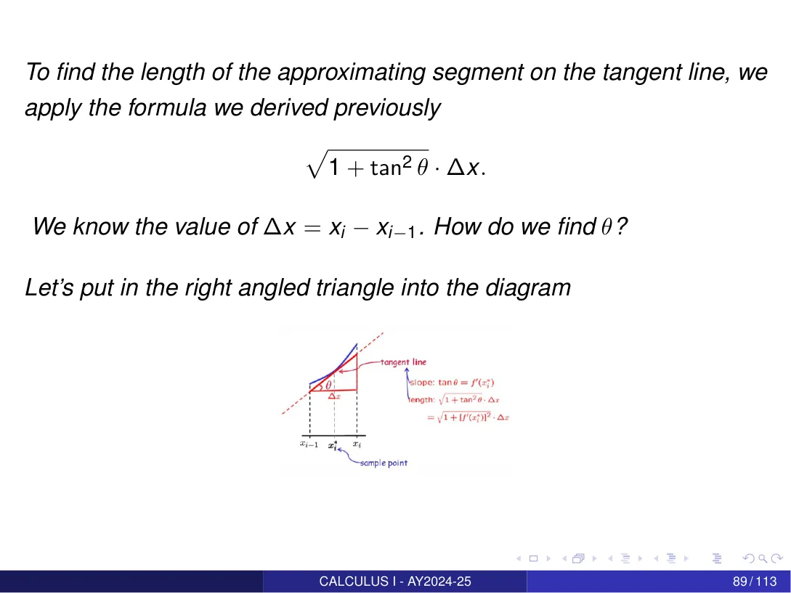
By the segment formula its length is $\sqrt{1+\tan^2\theta}\,\Delta x$. We know $\Delta x$; to find $\theta$ put the right triangle into the picture.
Theo công thức đoạn thẳng, độ dài của nó là $\sqrt{1+\tan^2\theta}\,\Delta x$. Ta biết $\Delta x$; để tìm $\theta$ hãy đặt tam giác vuông vào hình vẽ.
The slope is $f'(x_i^*)$, and the sum · Hệ số góc là $f'(x_i^*)$, và phép cộng
★★ Important · Quan trọng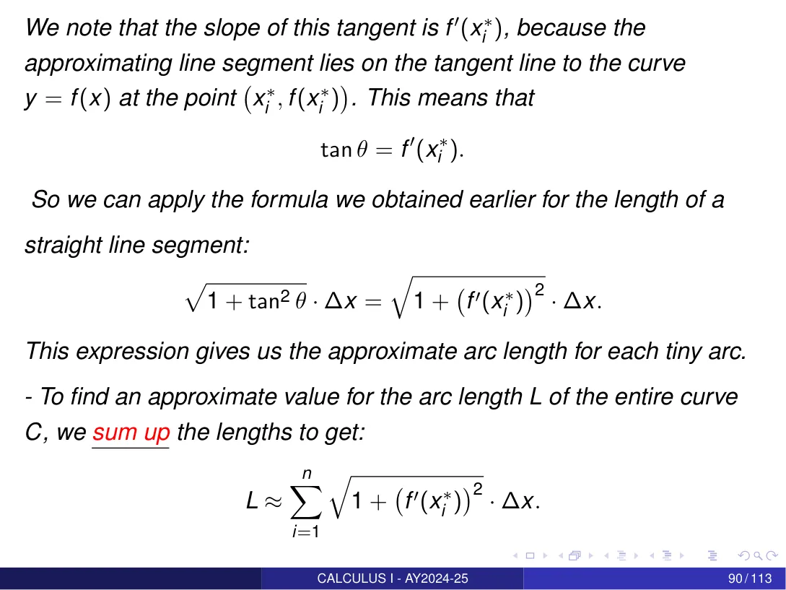
The tangent has slope $\tan\theta=f'(x_i^*)$, so each piece has length $\sqrt{1+f'(x_i^*)^2}\,\Delta x$ and $L\approx\sum_{i=1}^n\sqrt{1+f'(x_i^*)^2}\,\Delta x$.
Tiếp tuyến có hệ số góc $\tan\theta=f'(x_i^*)$ nên mỗi đoạn có độ dài $\sqrt{1+f'(x_i^*)^2}\,\Delta x$ và $L\approx\sum_{i=1}^n\sqrt{1+f'(x_i^*)^2}\,\Delta x$.
The limit is an integral · Giới hạn là một tích phân
★★ Important · Quan trọng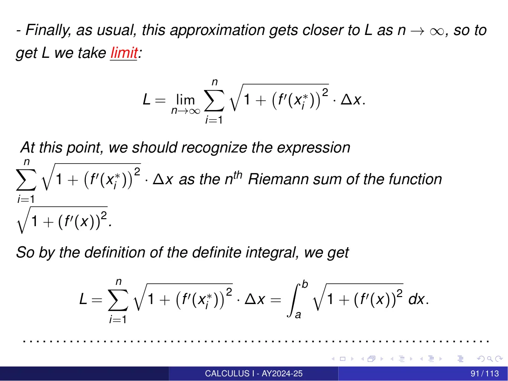
As $n\to\infty$ the approximation improves, and the sum is a Riemann sum of $\sqrt{1+(f')^2}$: $L=\lim\sum\sqrt{1+f'(x_i^*)^2}\,\Delta x=\int_a^b\sqrt{1+(f'(x))^2}\,dx$.
Khi $n\to\infty$ xấp xỉ tốt dần, và tổng là tổng Riemann của $\sqrt{1+(f')^2}$: $L=\lim\sum\sqrt{1+f'(x_i^*)^2}\,\Delta x=\int_a^b\sqrt{1+(f'(x))^2}\,dx$.
The arc length formula · Công thức độ dài cung
★★★ Core · Cốt lõi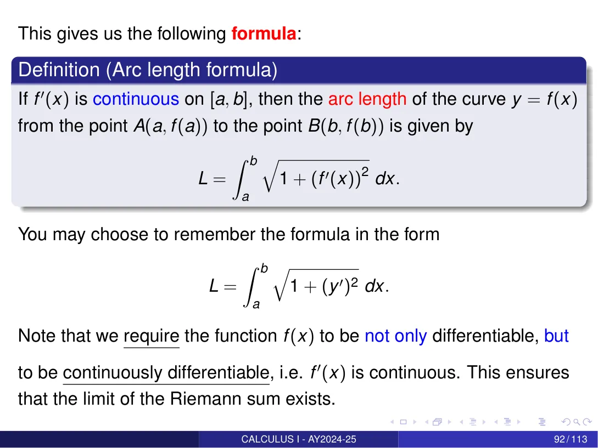
If $f'$ is continuous on $[a,b]$, the length of $y=f(x)$ from $A(a,f(a))$ to $B(b,f(b))$ is $L=\int_a^b\sqrt{1+(f'(x))^2}\,dx$. We need $f'$ continuous (continuously differentiable), not merely $f$ differentiable, so that the integral exists.
Nếu $f'$ liên tục trên $[a,b]$, độ dài của $y=f(x)$ từ $A(a,f(a))$ đến $B(b,f(b))$ là $L=\int_a^b\sqrt{1+(f'(x))^2}\,dx$. Cần $f'$ liên tục (khả vi liên tục) chứ không chỉ $f$ khả vi, để tích phân tồn tại.
The arc-length formula appears in every test on applications of integrals; the whole difficulty is to make $1+(f')^2$ a perfect square.
Công thức độ dài cung có trong mọi đề về ứng dụng tích phân; khó khăn duy nhất là biến $1+(f')^2$ thành một bình phương đúng.
Find the length of $y=x^{3/2}$ from $x=0$ to $x=1$.
Tìm độ dài của $y=x^{3/2}$ từ $x=0$ đến $x=1$.
Answer and solution · Đáp án và lời giải
Answer · Đáp án: $\dfrac{13\sqrt{13}-8}{27}$
$y'=\frac32\sqrt x$, $1+y'^2=1+\frac94x$. $L=\int_0^1\sqrt{1+\frac94x}\,dx=\frac8{27}\left[\left(1+\frac94x\right)^{3/2}\right]_0^1=\frac8{27}\left(\frac{13\sqrt{13}}8-1\right)=\frac{13\sqrt{13}-8}{27}\approx1.440$.
$y'=\frac32\sqrt x$, $1+y'^2=1+\frac94x$. $L=\int_0^1\sqrt{1+\frac94x}\,dx=\frac8{27}\left[\left(1+\frac94x\right)^{3/2}\right]_0^1=\frac8{27}\left(\frac{13\sqrt{13}}8-1\right)=\frac{13\sqrt{13}-8}{27}\approx1.440$.
Example: the semicubical parabola, setup · Ví dụ: parabol bán lập phương, thiết lập
★★★ Core · Cốt lõi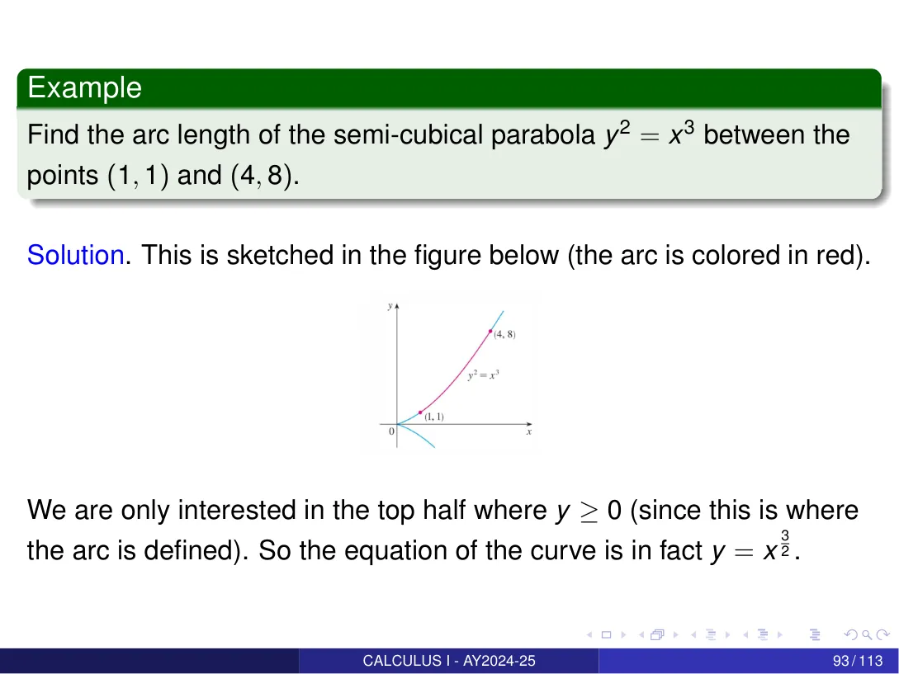
Find the length of $y^2=x^3$ between $(1,1)$ and $(4,8)$. The arc is in the upper half where $y\ge0$, so the curve is $y=x^{3/2}$.
Tìm độ dài của $y^2=x^3$ giữa $(1,1)$ và $(4,8)$. Cung nằm ở nửa trên ($y\ge0$) nên đường cong là $y=x^{3/2}$.
The semicubical parabola: the computation · Parabol bán lập phương: tính toán
★★★ Core · Cốt lõi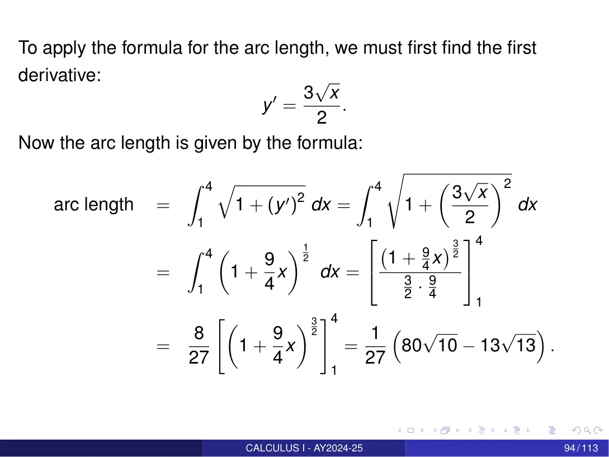
$y'=\frac32\sqrt x$, so $L=\int_1^4\sqrt{1+\frac94x}\,dx=\frac8{27}\left[\left(1+\frac94x\right)^{3/2}\right]_1^4=\frac8{27}\left(10^{3/2}-\left(\frac{13}4\right)^{3/2}\right)=\frac1{27}\left(80\sqrt{10}-13\sqrt{13}\right)\approx7.634$.
$y'=\frac32\sqrt x$, nên $L=\int_1^4\sqrt{1+\frac94x}\,dx=\frac8{27}\left[\left(1+\frac94x\right)^{3/2}\right]_1^4=\frac8{27}\left(10^{3/2}-\left(\frac{13}4\right)^{3/2}\right)=\frac1{27}\left(80\sqrt{10}-13\sqrt{13}\right)\approx7.634$.
Check the slide numerically: the value of $\frac1{27}\left(80\sqrt{10}-13\sqrt{13}\right)$ against the integral.
Kiểm tra bằng số: giá trị của $\frac1{27}\left(80\sqrt{10}-13\sqrt{13}\right)$ so với tích phân.
Answer and solution · Đáp án và lời giải
Answer · Đáp án: $\approx7.634$
$80\sqrt{10}\approx252.98$ and $13\sqrt{13}\approx46.87$; $(252.98-46.87)/27\approx7.634$, and numerical integration of $\sqrt{1+\frac94x}$ over $[1,4]$ gives the same.
$80\sqrt{10}\approx252.98$ và $13\sqrt{13}\approx46.87$; $(252.98-46.87)/27\approx7.634$, và tích phân số của $\sqrt{1+\frac94x}$ trên $[1,4]$ cho cùng kết quả.
The arc length function · Hàm độ dài cung
★★★ Core · Cốt lõi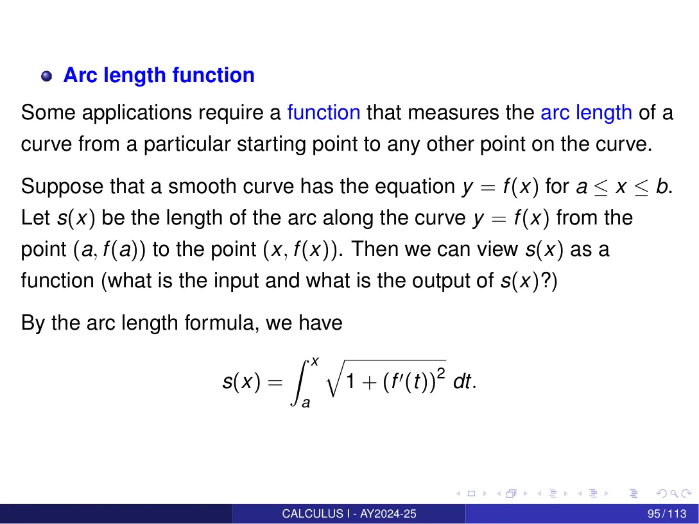
Sometimes we need the length measured from a fixed starting point to a variable point: $s(x)=\int_a^x\sqrt{1+(f'(t))^2}\,dt$. It is a function of $x$ (input: where we stop; output: the length so far), and by the FTC $s'(x)=\sqrt{1+(f'(x))^2}$.
Đôi khi cần độ dài tính từ một điểm đầu cố định đến một điểm biến thiên: $s(x)=\int_a^x\sqrt{1+(f'(t))^2}\,dt$. Đó là một hàm của $x$ (đầu vào: điểm dừng; đầu ra: độ dài đã đi) và theo FTC $s'(x)=\sqrt{1+(f'(x))^2}$.
Example: the arc length function of $x^2-\frac{\ln x}8$, setup · Ví dụ: hàm độ dài cung của $x^2-\frac{\ln x}8$, thiết lập
★★★ Core · Cốt lõi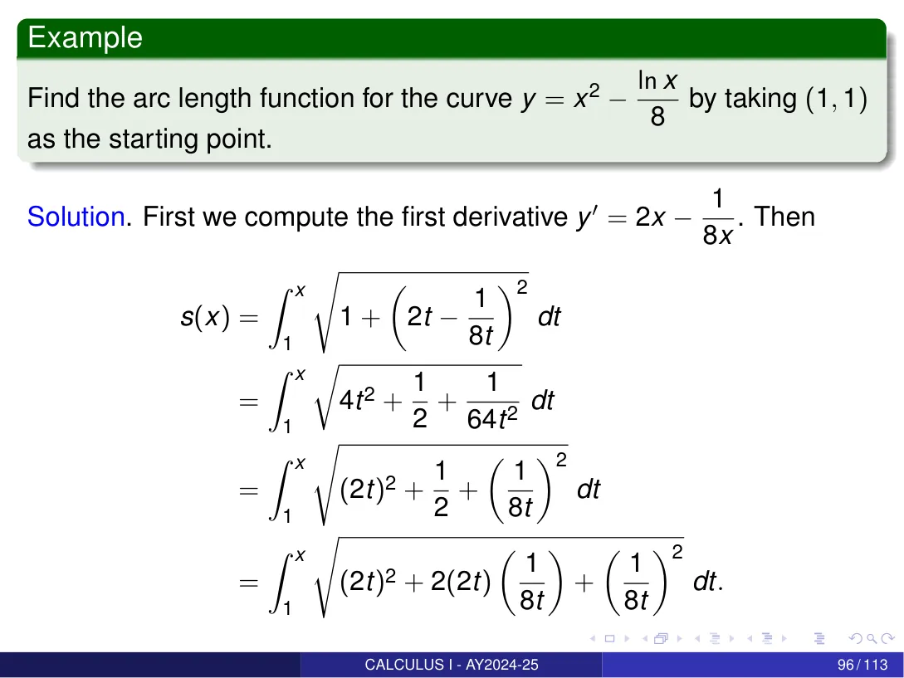
Find the arc length function for $y=x^2-\frac{\ln x}8$ starting at $(1,1)$. $y'=2x-\frac1{8x}$, so $s(x)=\int_1^x\sqrt{1+\left(2t-\frac1{8t}\right)^2}\,dt$. Expand the square under the root.
Tìm hàm độ dài cung của $y=x^2-\frac{\ln x}8$ bắt đầu từ $(1,1)$. $y'=2x-\frac1{8x}$, nên $s(x)=\int_1^x\sqrt{1+\left(2t-\frac1{8t}\right)^2}\,dt$. Khai triển bình phương dưới dấu căn.
The perfect-square trick · Mẹo bình phương đúng
★★★ Core · Cốt lõi$1+\left(2t-\frac1{8t}\right)^2=4t^2+\frac12+\frac1{64t^2}=\left(2t+\frac1{8t}\right)^2$. Since $2t+\frac1{8t}>0$ for $t>0$, the root is $2t+\frac1{8t}$ and $s(x)=\int_1^x\left(2t+\frac1{8t}\right)dt=x^2+\frac{\ln x}8-1$.
$1+\left(2t-\frac1{8t}\right)^2=4t^2+\frac12+\frac1{64t^2}=\left(2t+\frac1{8t}\right)^2$. Vì $2t+\frac1{8t}>0$ khi $t>0$ nên căn bằng $2t+\frac1{8t}$ và $s(x)=\int_1^x\left(2t+\frac1{8t}\right)dt=x^2+\frac{\ln x}8-1$.
Verify the slide: show $\left(2x+\frac1{8x}\right)^2=1+\left(2x-\frac1{8x}\right)^2$ and $s(1)=0$ for $s(x)=x^2+\frac{\ln x}8-1$.
Kiểm tra slide: chứng tỏ $\left(2x+\frac1{8x}\right)^2=1+\left(2x-\frac1{8x}\right)^2$ và $s(1)=0$ với $s(x)=x^2+\frac{\ln x}8-1$.
Answer and solution · Đáp án và lời giải
Answer · Đáp án: both hold
$\left(2x+\frac1{8x}\right)^2-\left(2x-\frac1{8x}\right)^2=4\cdot2x\cdot\frac1{8x}=1$ (difference of squares). And $s(1)=1+0-1=0$. Also $s'(x)=2x+\frac1{8x}$.
$\left(2x+\frac1{8x}\right)^2-\left(2x-\frac1{8x}\right)^2=4\cdot2x\cdot\frac1{8x}=1$ (hiệu hai bình phương). Và $s(1)=1+0-1=0$. Ngoài ra $s'(x)=2x+\frac1{8x}$.
The graphs, and why $s(1)=0$ and $s<0$ for $x<1$ · Đồ thị, và vì sao $s(1)=0$ và $s<0$ khi $x<1$
★★ Important · Quan trọng$s(1)=0$ because no length has been travelled yet at the starting point. For $0<x<1$ the integral $\int_1^x$ has its limits reversed, so $s(x)<0$: the length is measured backwards, counted negative.
$s(1)=0$ vì tại điểm đầu chưa đi được độ dài nào. Với $0<x<1$ tích phân $\int_1^x$ có cận đảo ngược nên $s(x)<0$: độ dài được đo ngược chiều, tính là âm.
Surface area: the question · Diện tích mặt: câu hỏi
★★★ Core · Cốt lõiWe found volumes of solids of revolution; how do we find the surface area of such a solid? The key is the arc length: the surface is generated by rotating a curve.
Ta đã tìm thể tích vật thể tròn xoay; làm sao tìm diện tích mặt của vật thể đó? Chìa khóa là độ dài cung: mặt được sinh ra khi quay một đường cong.
The idea: frustums (self-study) · Ý tưởng: hình nón cụt (tự học)
★★ Important · Quan trọngSame strategy: divide, approximate, sum, limit. Each small piece of the surface is a frustum (a cone with the tip cut off). The area of one frustum is (circumference) $\times$ (slant height) $=2\pi f(x_i^*)\sqrt{1+f'(x_i^*)^2}\,\Delta x$.
Cùng chiến lược: chia, xấp xỉ, cộng, giới hạn. Mỗi mảnh nhỏ của mặt là một hình nón cụt (hình nón bị cắt mất đỉnh). Diện tích một hình nón cụt là (chu vi) $\times$ (đường sinh) $=2\pi f(x_i^*)\sqrt{1+f'(x_i^*)^2}\,\Delta x$.
Summing the frustums · Cộng các hình nón cụt
★★ Important · Quan trọngThe height of the frustum is the arc length of the straight piece on its side. Summing, $\sum2\pi f(x_i^*)\sqrt{1+f'(x_i^*)^2}\,\Delta x$, and in the limit $\sum\to\int$, $\Delta x\to dx$: $\int_a^b2\pi f(x)\sqrt{1+(f'(x))^2}\,dx$.
Chiều cao của hình nón cụt là độ dài cung của đoạn thẳng ở cạnh bên. Cộng lại, $\sum2\pi f(x_i^*)\sqrt{1+f'(x_i^*)^2}\,\Delta x$, và ở giới hạn $\sum\to\int$, $\Delta x\to dx$: $\int_a^b2\pi f(x)\sqrt{1+(f'(x))^2}\,dx$.
The surface area theorem · Định lý diện tích mặt
★★★ Core · Cốt lõiIf $f\ge0$ has a continuous derivative on $[a,b]$, the surface generated by rotating $y=f(x)$ about the $x$-axis has area $S=\int_a^b2\pi f(x)\sqrt{1+(f'(x))^2}\,dx$. Mnemonic: $2\pi f(x)$ is the circumference and $\sqrt{1+(f')^2}\,dx$ is the arc length element.
Nếu $f\ge0$ có đạo hàm liên tục trên $[a,b]$, mặt sinh ra khi quay $y=f(x)$ quanh trục $x$ có diện tích $S=\int_a^b2\pi f(x)\sqrt{1+(f'(x))^2}\,dx$. Mẹo nhớ: $2\pi f(x)$ là chu vi và $\sqrt{1+(f')^2}\,dx$ là phần tử độ dài cung.
Find the lateral surface area of the cone generated by rotating $y=2x$, $0\le x\le1$, about the $x$-axis, and the surface of a sphere of radius $2$.
Tìm diện tích xung quanh của hình nón sinh bởi $y=2x$, $0\le x\le1$, quay quanh trục $x$, và diện tích mặt cầu bán kính $2$.
Answer and solution · Đáp án và lời giải
Answer · Đáp án: $2\sqrt5\,\pi$ and $16\pi$
Cone: $\int_0^12\pi(2x)\sqrt{1+4}\,dx=2\sqrt5\pi$ (matches $\pi r\ell=\pi\cdot2\cdot\sqrt5$). Sphere: $f=\sqrt{4-x^2}$, $f\sqrt{1+f'^2}=2$, so $\int_{-2}^22\pi\cdot2\,dx=16\pi$.
Nón: $\int_0^12\pi(2x)\sqrt{1+4}\,dx=2\sqrt5\pi$ (khớp $\pi r\ell=\pi\cdot2\cdot\sqrt5$). Cầu: $f=\sqrt{4-x^2}$, $f\sqrt{1+f'^2}=2$, nên $\int_{-2}^22\pi\cdot2\,dx=16\pi$.
Example: the parabola about the $y$-axis, setup · Ví dụ: parabol quanh trục $y$, thiết lập
★★★ Core · Cốt lõiThe formula with $x$ and $y$ exchanged · Công thức khi đổi vai trò $x$ và $y$
★★★ Core · Cốt lõiWrite $x=\sqrt y$, so $x'=\frac1{2\sqrt y}$. About the $y$-axis: $S=\int_c^d2\pi g(y)\sqrt{1+(x')^2}\,dy$ with $[c,d]$ the range of $y$ and $g(y)=\sqrt y$ the radius of each frustum.
Viết $x=\sqrt y$, nên $x'=\frac1{2\sqrt y}$. Quanh trục $y$: $S=\int_c^d2\pi g(y)\sqrt{1+(x')^2}\,dy$ với $[c,d]$ là miền giá trị của $y$ và $g(y)=\sqrt y$ là bán kính của mỗi hình nón cụt.
The computation: $\frac\pi6(17\sqrt{17}-5\sqrt5)$ · Tính toán: $\frac\pi6(17\sqrt{17}-5\sqrt5)$
★★★ Core · Cốt lõi$S=\int_1^42\pi\sqrt y\sqrt{1+\frac1{4y}}\,dy=\pi\int_1^4\sqrt{4y+1}\,dy=\pi\cdot\frac{(4y+1)^{3/2}}6\Big|_1^4=\frac\pi6\left(17\sqrt{17}-5\sqrt5\right)$. Simplify the root by writing $\sqrt y\sqrt{1+\frac1{4y}}=\sqrt{y+\frac14}=\frac12\sqrt{4y+1}$.
$S=\int_1^42\pi\sqrt y\sqrt{1+\frac1{4y}}\,dy=\pi\int_1^4\sqrt{4y+1}\,dy=\pi\cdot\frac{(4y+1)^{3/2}}6\Big|_1^4=\frac\pi6\left(17\sqrt{17}-5\sqrt5\right)$. Rút gọn căn bằng cách viết $\sqrt y\sqrt{1+\frac1{4y}}=\sqrt{y+\frac14}=\frac12\sqrt{4y+1}$.
Find the surface area when $y=x^2$ for $0\le y\le2$ (i.e. $0\le x\le\sqrt2$) is rotated about the $y$-axis.
Tìm diện tích mặt khi quay $y=x^2$ với $0\le y\le2$ (tức $0\le x\le\sqrt2$) quanh trục $y$.
Answer and solution · Đáp án và lời giải
Answer · Đáp án: $\dfrac{13\pi}3$
Same simplification: $S=\pi\int_0^2\sqrt{4y+1}\,dy=\pi\cdot\frac{(4y+1)^{3/2}}6\Big|_0^2=\frac\pi6(27-1)=\frac{13\pi}3$.
Cùng cách rút gọn: $S=\pi\int_0^2\sqrt{4y+1}\,dy=\pi\cdot\frac{(4y+1)^{3/2}}6\Big|_0^2=\frac\pi6(27-1)=\frac{13\pi}3$.
End of Chapter 4 · Kết thúc Chương 4
★ Context · Bổ trợEnd of Chapter 4. Recap: integral as a limit of sums, FTC, substitution and parts, and the applications volume, arc length, surface area, all built on divide, approximate, sum, limit.
Kết thúc Chương 4. Tóm tắt: tích phân là giới hạn của các tổng, FTC, đổi biến và từng phần, và các ứng dụng thể tích, độ dài cung, diện tích mặt, tất cả dựa trên chia, xấp xỉ, cộng, giới hạn.
Appendix to Chapter 4 · Phụ lục của Chương 4
★ Context · Bổ trợThe appendix explains two derivations: the cross-sectional method for general solids, and the alternative method of cylindrical shells. Self-study, useful to understand why the formulas hold.
Phụ lục giải thích hai chứng minh: phương pháp mặt cắt cho vật thể tổng quát, và phương pháp vỏ trụ thay thế. Tự học, hữu ích để hiểu vì sao các công thức đúng.
Appendix: cross-sections of a general solid · Phụ lục: mặt cắt của vật thể tổng quát
★★ Important · Quan trọngAppendix: dividing the solid into slabs · Phụ lục: chia vật thể thành các tấm
★★ Important · Quan trọngDivide $S$ into $n$ slabs of equal width $\Delta x$ using the planes $P_{x_1},\dots,P_{x_n}$, which divides $[a,b]$ into $n$ subintervals. Zoom in on the $i$-th slab.
Chia $S$ thành $n$ tấm bề rộng $\Delta x$ bằng các mặt phẳng $P_{x_1},\dots,P_{x_n}$, tức chia $[a,b]$ thành $n$ đoạn con. Phóng to vào tấm thứ $i$.
Appendix: approximating a slab by a cylinder · Phụ lục: xấp xỉ một tấm bằng hình trụ
★★ Important · Quan trọngA slab is not a cylinder, so replace it by a cylinder with the constant cross-section $A(x_i^*)$ and height $\Delta x$ for a sample point $x_i^*$ (left, right or midpoint): its volume is $A(x_i^*)\,\Delta x$.
Một tấm không phải hình trụ, nên thay nó bằng hình trụ có mặt cắt không đổi $A(x_i^*)$ và chiều cao $\Delta x$ với điểm lấy mẫu $x_i^*$ (đầu trái, đầu phải hoặc trung điểm): thể tích của nó là $A(x_i^*)\,\Delta x$.
Appendix: from the sum to the integral · Phụ lục: từ tổng đến tích phân
★★ Important · Quan trọngAppendix: the shell method, setup · Phụ lục: phương pháp vỏ trụ, thiết lập
★★ Important · Quan trọngDivide $[a,b]$ into $n$ subintervals, approximate the region under $y=f(x)$ by $n$ strips, and rotate each strip about the $y$-axis: each strip becomes a thin cylindrical shell; together the shells approximate the solid.
Chia $[a,b]$ thành $n$ đoạn con, xấp xỉ miền dưới $y=f(x)$ bằng $n$ dải, và quay mỗi dải quanh trục $y$: mỗi dải thành một vỏ trụ mỏng; các vỏ trụ cùng nhau xấp xỉ vật thể.
Appendix: the shell sum and its limit · Phụ lục: tổng vỏ trụ và giới hạn của nó
★★ Important · Quan trọngThe $i$-th shell has volume (average circumference) $\times$ (height) $\times$ (thickness) $=2\pi\bar x_i\,f(\bar x_i)\,\Delta x$; summing and taking the limit gives $V=\int_a^b2\pi x\,f(x)\,dx$.
Vỏ trụ thứ $i$ có thể tích (chu vi trung bình) $\times$ (chiều cao) $\times$ (bề dày) $=2\pi\bar x_i\,f(\bar x_i)\,\Delta x$; cộng lại rồi lấy giới hạn cho $V=\int_a^b2\pi x\,f(x)\,dx$.